<!doctype html>
<html lang="en">
<head>
  <meta charset="utf-8">
  <meta name="viewport" content="width=device-width, initial-scale=1">
  <title>arxiv digest — 2026-09-24</title>
  <style>
:root {
  --bg: #ffffff;
  --fg: #1f2328;
  --muted: #59636e;
  --border: #d0d7de;
  --card: #f6f8fa;
  --link: #0969da;
}
body {
  max-width: 980px;
  margin: 0 auto;
  padding: 2rem 1rem 5rem;
  font-family: -apple-system, BlinkMacSystemFont, "Segoe UI", Helvetica, Arial, sans-serif;
  line-height: 1.55;
  color: var(--fg);
  background: var(--bg);
}
a { color: var(--link); }
img { max-width: 100%; height: auto; }
pre, code { background: var(--card); border-radius: 6px; }
pre { padding: 1rem; overflow-x: auto; }
blockquote { border-left: 4px solid var(--border); padding-left: 1rem; color: var(--muted); }
details { margin: 0.6rem 0; }
summary { cursor: pointer; font-weight: 600; }
.paper-figures-scroll {
  display: flex;
  gap: 1rem;
  overflow-x: auto;
  overscroll-behavior-x: contain;
  padding: 0.75rem 0.25rem 1rem;
  margin: 1rem 0 1.25rem;
  border-top: 1px solid var(--border);
  border-bottom: 1px solid var(--border);
  scroll-snap-type: x proximity;
}
.paper-figure-card {
  flex: 0 0 min(260px, 72vw);
  scroll-snap-align: start;
  background: var(--card);
  border: 1px solid var(--border);
  border-radius: 12px;
  padding: 0.55rem;
}
.paper-figure-card img {
  display: block;
  width: 100%;
  max-height: 240px;
  object-fit: contain;
  background: white;
  border-radius: 8px;
}
.paper-figure-caption {
  display: block;
  margin-top: 0.5rem;
  color: var(--muted);
  font-size: 0.85rem;
}
.figure-strip-hint {
  color: var(--muted);
  font-size: 0.9rem;
  margin-bottom: -0.3rem;
}
</style>
  <!-- MathJax: renders $...$ inline math and $$...$$ display math, plus
       \(...\) and \[...\]. Loaded from the official CDN; works offline
       once cached. Configured to skip code/pre blocks so arxiv IDs that
       look like dollar amounts don't get mangled. -->
  <script>
    window.MathJax = {
      tex: {
        inlineMath: [['$', '$'], ['\\(', '\\)']],
        displayMath: [['$$', '$$'], ['\\[', '\\]']],
        processEscapes: true,
        processEnvironments: true
      },
      options: {
        skipHtmlTags: ['script', 'noscript', 'style', 'textarea', 'pre', 'code'],
        ignoreHtmlClass: 'tex2jax_ignore',
        processHtmlClass: 'tex2jax_process'
      }
    };
  </script>
  <script id="MathJax-script" async
    src="https://cdn.jsdelivr.net/npm/mathjax@3/es5/tex-chtml.js"></script>
</head>
<body>
<header style="background-color: #333; color: white; padding: 15px; margin-bottom: 20px;">
  <h1 style="margin: 0; font-size: 24px;">
    <a href="https://ochelpan.github.io/arXiv_clean/" style="color: white; text-decoration: none;">Main</a>
  </h1>
</header>

<h1>Daily arXiv Report</h1>

<hr>
<p>
<a href="index.html">← Index</a>
 · <a href="papers_02.html">Next →</a>
</p>
<hr>

<h2>Papers 1–20</h2>
<p><a id="paper-2609.25368"></a></p>
<h3 id="low-rank-propagation-for-tridiagonalizable-open-quantum-systems-near-linear-scaling-with-system-size">⭐ <a href="http://arxiv.org/abs/2609.25368v1">Low-rank propagation for tridiagonalizable open quantum systems: near-linear scaling with system size</a></h3>
<p><strong>Highlighted author(s):</strong> Andrii G. Sotnikov, Denys I. Bondar<br>
<strong>Authors:</strong> Roman Ovsiannikov, Kurt Jacobs, Andrii G. Sotnikov, Denys I. Bondar<br>
<strong>Type:</strong> theory · <strong>Category:</strong> other · <strong>PDF:</strong> <a href="https://arxiv.org/pdf/2609.25368v1">https://arxiv.org/pdf/2609.25368v1</a><br>
<strong>Analysis basis:</strong> full PDF text, analyzed in chunks
<strong>Topic relevance:</strong> 🔥 <code>methods for driven-dissipative</code> <strong>5/5</strong> · <code>Tavis-Cummings &amp; cavity-many-emitter</code> <strong>3/5</strong> · <code>analog quantum simulation</code> <strong>3/5</strong> · <code>driven-dissipative phase transition</code> <strong>3/5</strong> · <code>correlated / nonlocal dissipation</code> <strong>2/5</strong> · <code>QC/QI experiment</code> <strong>1/5</strong> · <code>non-equilibrium universality</code> <strong>1/5</strong> · <code>quantum measurements</code> <strong>1/5</strong> · <code>quantum optics experiment</code> <strong>1/5</strong></p>
<div class="figure-strip-hint">↔ Scroll figures horizontally</div>
<div class="paper-figures-scroll">
<figure class="paper-figure-card">

<figcaption class="paper-figure-caption"><b>Fig 1.</b> FIG. 1. Absolute error in the cavity quadrature variance, | VarERT,R(X; t) −VarQuTiP(X; t)|, for R = 2, 4, 8, 16 and Ncav = 15, J = 5 (D = 165). The evolution interval is 0 ≤t ≤5 ns, with δt = 1/720 ns. The vertical axis is logarith- mic. QuTiP starts from the full finite-dimensional thermal product state, whereas ERT starts from its normalized rank-R approximation; the error therefore includes initial-state trun- cation.</figcaption>
</figure>
<figure class="paper-figure-card">
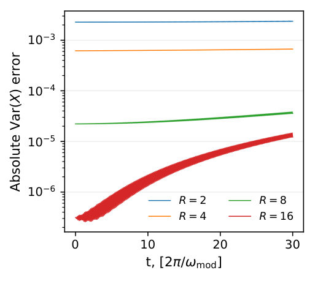
<figcaption class="paper-figure-caption"><b>Fig 2.</b> Figure 1 resolves the absolute error in Var(X) for the four retained ranks. The maximum sampled errors over 0 ≤t ≤5 ns are approximately 2.39 × 10−3, 6.70 × 10−4, 3.83 × 10−5, and 1.47 × 10−5 for R = 2, 4, 8, 16, respec- tively. For R = 16, the initial error is approximately 3.13 × 10−7 and increases during the evolution.</figcaption>
</figure>
<figure class="paper-figure-card">
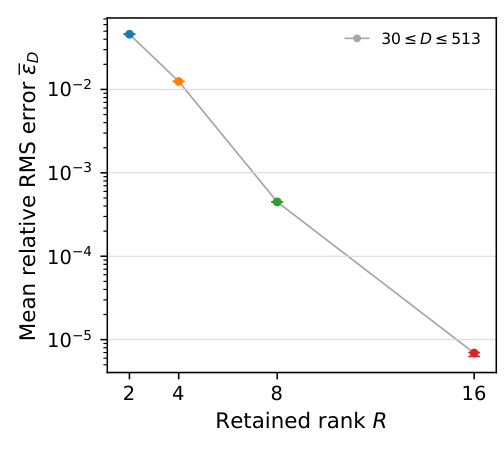
<figcaption class="paper-figure-caption"><b>Fig 3.</b> FIG. 2. Integrated relative RMS error versus retained rank R, combining the errors in Var(X), Var(P), ⟨a†a⟩, and ⟨Jz⟩ over 0 ≤t ≤0.5 ns. Filled circles show results for eight dimensions in the range 30 ≤D ≤513. Vertical bars indicate the minimum and maximum errors across these dimensions at fixed R.</figcaption>
</figure>
<figure class="paper-figure-card">
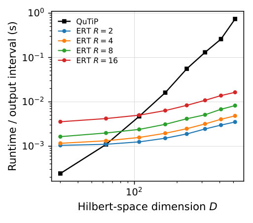
<figcaption class="paper-figure-caption"><b>Fig 4.</b> FIG. 3. Recorded computation time per output interval for QuTiP and ERT with R = 2, 4, 8, 16, over 30 ≤D ≤513. The plotted quantity is the recorded runtime divided by Nt −1 = 360, for 0 ≤t ≤0.5 ns and output spacing δt = 1/720 ns. Both axes are logarithmic.</figcaption>
</figure>
<figure class="paper-figure-card">

<figcaption class="paper-figure-caption"><b>Fig 5.</b> Figure 3 compares the recorded computation time di- vided by the number of output intervals,</figcaption>
</figure>
</div>

<p><strong>Summary.</strong> This paper presents a novel, deterministic algorithm to simulate large open quantum systems governed by the Lindblad equation. By exploiting the tridiagonal structure of the system Hamiltonian and employing ensemble rank truncation, the method achieves near-linear scaling with system size. This breakthrough significantly accelerates simulations for models like NV-cavity systems, making previously intractable dynamics accessible.</p>
<p><strong>Why it may be interesting.</strong> This work provides a powerful, scalable numerical tool for simulating complex open quantum dynamics in systems like cavity QED or NV centers, overcoming the exponential scaling bottleneck inherent in density matrix methods.</p>
<details>
<summary>Detailed structure</summary>
<p><strong>Main problem.</strong> The central obstacle in simulating large open quantum systems is the quadratic growth of the density matrix ($
ho$) with the Hilbert-space dimension ($D$).</p>
<p><strong>Main result.</strong> The authors introduce a deterministic algorithm that achieves memory and computational cost linear in $D$ for fixed low rank $R$, significantly accelerating simulations compared to existing tools like QuTiP.</p>
<p><strong>Method.</strong> The method combines exploiting the tridiagonal structure of the Hamiltonian for coherent evolution (using split-operator steps) with Ensemble Rank Truncation (ERT) for the dissipative Lindblad evolution.</p>
<p><strong>Model / system.</strong> The method is tested on open quantum systems governed by the Lindblad equation, specifically using a driven nitrogen-vacancy (NV) center coupled to a cavity.</p>
<p><strong>Key observables.</strong> Expectation values $\langle O 
angle = 	ext{Tr}(O
ho)$, and the method reproduces the QuTiP quadrature-variance evolution.</p>
<p><strong>Important parameters / regimes.</strong> The retained ensemble rank ($R$) is crucial; the method is most efficient when the system structure allows for tridiagonalization.</p>
<p><strong>Assumptions / limitations.</strong> The method assumes the Hamiltonian and collapse operators can be ordered such that they are diagonal or tridiagonal. The efficiency relies on the ability to truncate the ensemble rank $R$ while maintaining accuracy.</p>
<p><strong>Figures summary.</strong> Not specified.</p>
<p><strong>Paper structure.</strong> The paper develops a general ERT propagation algorithm for open systems with sparse structure, detailing the split-operator approach for unitary evolution and the Gram matrix compression for the dissipative map.</p>
</details>
<details>
<summary>Abstract</summary>
<p>The quadratic growth of the density matrix with Hilbert-space dimension D is the central obstacle to simulating large open quantum systems. We introduce a deterministic algorithm that eliminates it for Lindblad dynamics whose Hamiltonian consists of a time-dependent diagonal part plus terms that are tridiagonal after reordering the basis. The state is a low-rank ensemble of vectors, propagated by tridiagonal split-operator steps and ensemble rank truncation of short-time Kraus branches, so that memory and cost per step are linear in D at fixed rank. For a driven nitrogen-vacancy-cavity model, rank 16 reproduces full density-matrix observables to relative error below $10^{-5}$, the method is up to two orders of magnitude faster than QuTiP already at $D \approx 500$, and its runtime scales nearly linearly.</p>
</details>
<p><sub><a href="#top">↑ back to top</a></sub></p>

<p><a id="paper-2609.26599"></a></p>
<h3 id="unraveling-the-emergence-of-slow-dynamics-in-u1-lattice-gauge-theories">⭐ <a href="http://arxiv.org/abs/2609.26599v1">Unraveling the Emergence of Slow Dynamics in U(1) Lattice Gauge Theories</a></h3>
<p><strong>Highlighted author(s):</strong> Zala Lenarčič<br>
<strong>Authors:</strong> Riccardo Andreoni, Zala Lenarčič, Zeno Bacciconi, Antonello Scardicchio, Marcello Dalmonte, Devendra Singh Bhakuni<br>
<strong>Type:</strong> theory · <strong>Category:</strong> statistical mechanics · <strong>PDF:</strong> <a href="https://arxiv.org/pdf/2609.26599v1">https://arxiv.org/pdf/2609.26599v1</a><br>
<strong>Analysis basis:</strong> full PDF text, analyzed in chunks
<strong>Topic relevance:</strong> 🔥 <code>analog quantum simulation</code> <strong>4/5</strong> · 🔥 <code>scars &amp; prethermalization</code> <strong>4/5</strong> · <code>Rydberg arrays</code> <strong>3/5</strong> · <code>non-equilibrium universality</code> <strong>3/5</strong> · <code>Frenkel-Kontorova</code> <strong>1/5</strong> · <code>Keldysh / 2PI / non-Gaussian methods</code> <strong>1/5</strong> · <code>correlated / nonlocal dissipation</code> <strong>1/5</strong> · <code>driven-dissipative phase transition</code> <strong>1/5</strong></p>
<div class="figure-strip-hint">↔ Scroll figures horizontally</div>
<div class="paper-figures-scroll">
<figure class="paper-figure-card">
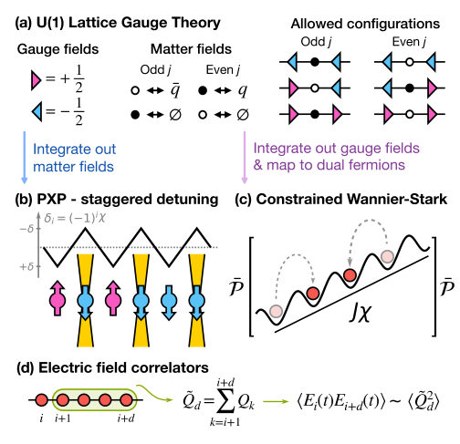
<figcaption class="paper-figure-caption"><b>Fig 1.</b> Figure 1. (a-c) Mapping of Rydberg Hamiltonian with stag- gered detuning in the Rydberg blockade regime (PXP model) to a constrained Wannier-Stark model via U(1) LGT. Repre- sentation of gauge and matter fields in LGT and allowed con- figurations from Gauss’s law. (d) The mapping of the electric- field correlations in the PXP (also LGT) to the subsystem charge fluctuations in the constraint XX model (CXX). The same can be extended to different spin S &gt; 1/2 representa- tions of the gauge fields in QLM.</figcaption>
</figure>
<figure class="paper-figure-card">
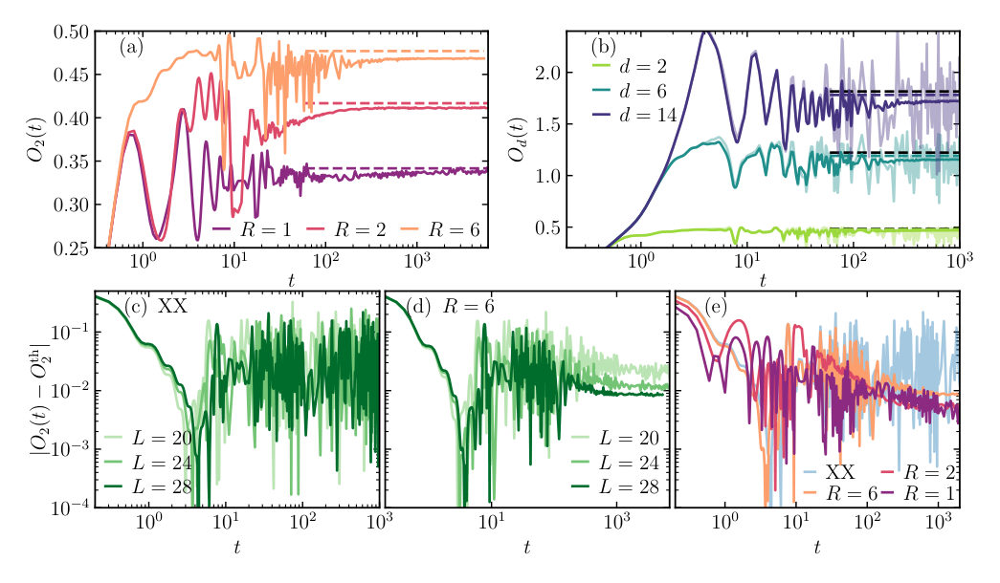
<figcaption class="paper-figure-caption"><b>Fig 2.</b> Figure 2. (a) Dynamics of the subsystem particle number fluctuations Od(t) with domain d = 2 for different constraint radii R and L = 28. The dashed lines correspond to the thermal value of the observable Oth d = Tr[ρthOd]. (b) Dynamics of O2(t) for a fixed R = 6 (weakly perturbed XX model) for different subsystem sizes d for L = 28. The less transparent background colors correspond to the results of the unconstrained XX model. The dashed lines represent the corresponding infinite temperature values. (c,d) Finite-size scaling of the late-time fluctuations in |O2(t) −Oth 2 | for the unconstrained XX model in (d) and R = 6 in (c). (e) The difference in the value of the observable from its...</figcaption>
</figure>
<figure class="paper-figure-card">
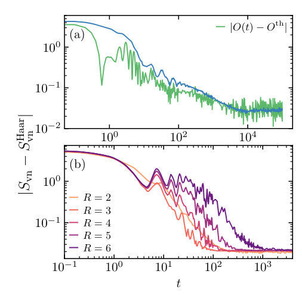
<figcaption class="paper-figure-caption"><b>Fig 3.</b> Figure 3. The relaxation of the subsystem entanglement en- tropy to the Haar value. (a) For a fixed R = 1 along with |O(t) −Oth| (multiplied by a factor of 10) for L = 26 to high- light the relaxation of the observable is accompanied by the relaxation of the subsystem entanglement entropy on same time scales. (b) For different constraint radii R.</figcaption>
</figure>
<figure class="paper-figure-card">
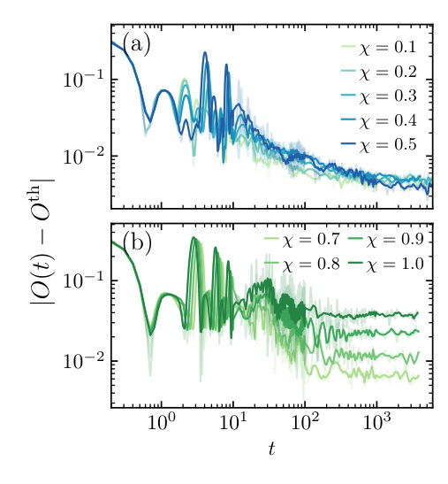
<figcaption class="paper-figure-caption"><b>Fig 4.</b> Figure 4. The difference of the value of observable from its infinite temperature value for different χ, with R = 1 and L = 26. The top panel is for small χ, while the bottom panel is for larger χ. The less transparent colors show the raw data, while darker shades show smoothed data.</figcaption>
</figure>
<figure class="paper-figure-card">
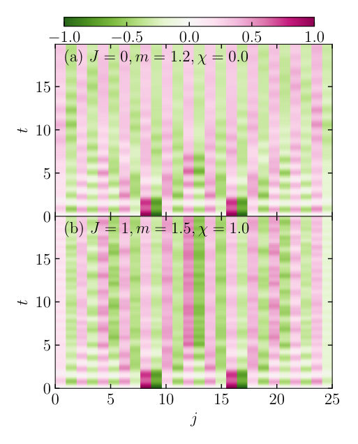
<figcaption class="paper-figure-caption"><b>Fig 5.</b> Figure 5. Dynamics of the local charge ⟨Qi(t)⟩for R = 2. The system is initialized in a state containing a pair of mesons separated by a finite distance. (a) The system is first quenched with J = 0, χ = 0.0, and m = 1.2. (b) At the onset of the meson collision, t = 5, a second quench is performed, changing the parameters to J = 0, χ = 1.0, and m = 1.5.</figcaption>
</figure>
</div>

<p><strong>Summary.</strong> This work unifies the understanding of slow dynamics in U(1) Lattice Gauge Theories by mapping them onto constrained fermionic models. The authors show that non-thermal behavior can be explained either as prethermalization (no $\theta$ term) or freezing due to an emergent Stark potential ($\theta$ term). This suggests that subdiffusive transport is a generic feature arising from emergent conservation laws in these systems.</p>
<p><strong>Why it may be interesting.</strong> It provides a deep theoretical link between gauge field dynamics and fermionic models exhibiting non-equilibrium behavior, which is highly relevant for understanding quantum simulation results in Rydberg arrays.</p>
<details>
<summary>Detailed structure</summary>
<p><strong>Main problem.</strong> The paper addresses the poorly understood origin of slow, non-thermal dynamics (such as subdiffusion or freezing) observed in one-dimensional U(1) Lattice Gauge Theories (LGTs).</p>
<p><strong>Main result.</strong> The authors establish an exact analytical mapping from U(1) LGTs to non-local kinetically constrained fermionic models, showing that non-thermal behavior arises from proximity to integrable models or emergent conservation laws.</p>
<p><strong>Method.</strong> The core method involves deriving a dual fermionic description by integrating out gauge degrees of freedom and analyzing the resulting Hamiltonian structure.</p>
<p><strong>Model / system.</strong> The system is the U(1) LGT, which is mapped to a fermionic model featuring an emergent linear Stark potential. The analysis is performed on 1D systems, drawing parallels to Rydberg atom arrays.</p>
<p><strong>Key observables.</strong> Electric-field correlations, subsystem charge fluctuations, and the decay profile of spin transport ($ ilde{C}_s(x, t)$).</p>
<p><strong>Important parameters / regimes.</strong> The topological $\theta$ angle, the constraint radius $R$, and the system size $L$.</p>
<p><strong>Assumptions / limitations.</strong> The framework assumes the existence of an exact analytical mapping between the gauge theory and the constrained fermionic model.</p>
<p><strong>Figures summary.</strong> Figures illustrate the mapping from the Rydberg Hamiltonian to the constrained Wannier-Stark model, and show the finite-size scaling of charge fluctuations ($O_d(t)$) for different constraint radii $R$.</p>
<p><strong>Paper structure.</strong> The paper progresses by first introducing the physical problem (slow dynamics in LGTs), then presenting the exact mapping to the fermionic model, and finally analyzing the resulting dynamics using conservation laws and scaling arguments.</p>
</details>
<details>
<summary>Abstract</summary>
<p>The dynamics of gauge theories is of fundamental interest, with low-dimensional systems displaying a rich phenomenology beyond the rapid thermalization typical of QCD and non-Abelian theories. In particular, recent quantum simulation experiments have reported robust and unexpected signatures of slow relaxation in generic regimes and at large volumes in one-dimensional U(1) lattice gauge theories (LGTs), whose origin remains poorly understood. Here, we present a framework that provides a unified perspective on such slow dynamics and establishes a new route for exploring subdiffusive fractonic hydrodynamics in Rydberg experiments. The backbone of our theory is an exact analytical mapping from U(1) LGTs with a topological $θ$ angle to non-local kinetically constrained fermionic models with an emergent linear Stark potential. In the absence of the $θ$ term, this framework interprets the non-thermal dynamics reported in recent experiments as prethermal behavior arising from proximity to an integrable free-fermion model. For non-zero $θ$, the emergent Stark potential instead explains the freezing dynamics observed in other recent experiments. We argue that this correspondence could also lead to subdiffusive transport due to emergent conservation laws. We predict that these phenomena arise in a much broader class of models, and support this prediction with numerical simulations and proposals for future experiments.</p>
</details>
<p><sub><a href="#top">↑ back to top</a></sub></p>

<p><a id="paper-2609.26462"></a></p>
<h3 id="quantum-fisher-information-of-driven-dissipative-systems-from-keldysh-path-integrals">⭐ <a href="http://arxiv.org/abs/2609.26462v1">Quantum Fisher information of driven-dissipative systems from Keldysh path integrals</a></h3>
<p><strong>Highlighted author(s):</strong> Igor Lesanovsky<br>
<strong>Authors:</strong> Malik Jirasek, Igor Lesanovsky, Viktoria Noel<br>
<strong>Type:</strong> theory · <strong>Category:</strong> statistical mechanics · <strong>PDF:</strong> <a href="https://arxiv.org/pdf/2609.26462v1">https://arxiv.org/pdf/2609.26462v1</a><br>
<strong>Analysis basis:</strong> full PDF text, analyzed in chunks
<strong>Topic relevance:</strong> 🔥 <code>Keldysh / 2PI / non-Gaussian methods</code> <strong>4/5</strong> · <code>driven-dissipative phase transition</code> <strong>3/5</strong> · <code>methods for driven-dissipative</code> <strong>3/5</strong> · <code>Tavis-Cummings &amp; cavity-many-emitter</code> <strong>1/5</strong> · <code>analog quantum simulation</code> <strong>1/5</strong> · <code>correlated / nonlocal dissipation</code> <strong>1/5</strong> · <code>non-equilibrium universality</code> <strong>1/5</strong> · <code>quantum measurements</code> <strong>1/5</strong></p>
<div class="figure-strip-hint">↔ Scroll figures horizontally</div>
<div class="paper-figures-scroll">
<figure class="paper-figure-card">
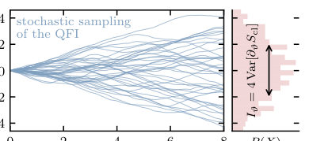
<figcaption class="paper-figure-caption"><b>Fig 1.</b> FIG. 1. Path integral description of continuous sens- ing. (a) Schematic setup: The output of a driven-dissipative many-body system is monitored. From the detector data an estimator for some parameter ϑ encoded in the system dy- namical generator Lϑ is computed. (b) The Keldysh inte- gration time contour for the generating functional at time t with forward (C+) and backward (C−) branch. The two branches are coupled through the term ˆLˆρˆL† in the master equation Eq. (1). (c) The semiclassical quantum Fisher infor- mation (QFI) is obtained by computing the ensemble variance of ∂ϑScl along stochastic trajectories. Sample trajectories and distribution shown here are obtained from simulations...</figcaption>
</figure>
<figure class="paper-figure-card">
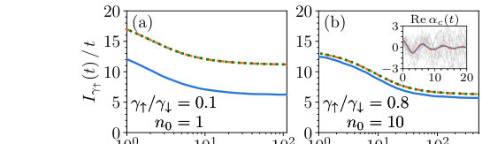
<figcaption class="paper-figure-caption"><b>Fig 2.</b> FIG. 2. Semiclassical and exact QFI for the driven- dissipative harmonic oscillator. QFI rate Iγ↑(t)/t over time for (a) γ↑/γ↓= 0.1, n0 = 1, and (b) γ↑/γ↓= 0.8, n0 = 10, with n0 the mean occupation of the initial ther- mal state. Here γ↓= ω. Blue solid lines: semiclassical results from 105 trajectories. Orange dashed lines: exact numeri- cal results. Green dotted lines: exact analytical results. Inset in (b): Harmonic oscillator amplitude Re αc(t) obtained semi- classically (blue) and exactly (orange dashed), with 20 sample semiclassical trajectories in grey. For higher initial occupation and stronger pumping rate γ↑the semiclassical approximation becomes increasingly applicable.</figcaption>
</figure>
<figure class="paper-figure-card">
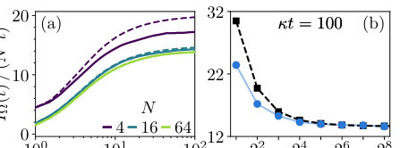
<figcaption class="paper-figure-caption"><b>Fig 3.</b> FIG. 3. Semiclassical and exact QFI for the BTC model. In both panels Ω= 2 Ωc. All spins were initialised in the spin up state. (a) Time resolved global QFI for different system sizes, N. Dashed lines: exact values obtained by evo- lution according to the full deformed master equation. Solid lines: semiclassical QFI averaged over 104 trajectories with color shaded area indicating the Monte-Carlo standard devi- ation. (b) The same quantity, IΩ/(N 2t), at κt = 100, i.e. the terminal values in (a), as a function of N up to N = 256. The semiclassical approximation becomes more applicable with in- creasing system size N.</figcaption>
</figure>
<figure class="paper-figure-card">
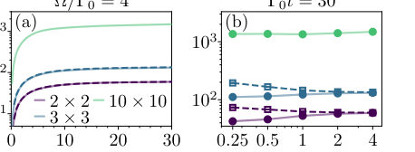
<figcaption class="paper-figure-caption"><b>Fig 4.</b> FIG. 4. Semiclassical and exact QFI for a two- dimensional atomic array. (a) Time resolved global QFI rate for square lattices of size L × L with L = 2, 3, 10 and driving strength Ω/Γ0 = 4, averaged over 104 trajectories. The lattice constant is a = 0.8λ, with λ the dipole transi- tion wavelength. All atoms are initialized in their ground state. (b) Time cut of the QFI rate at Γ0t = 30 for different driving strengths. In both panels dashed lines correspond to exact simulations using evolution with the full deformed mas- ter equation while solid lines show results obtained through the semiclassical approximation. The semiclassical approxi- mation becomes increasingly applicable with stronger...</figcaption>
</figure>
</div>

<p><strong>Summary.</strong> This paper develops a field-theoretical approach using Keldysh path integrals to calculate the Quantum Fisher Information (QFI) for sensing in open quantum systems. By employing a semiclassical approximation, the authors derive a tractable formula for the QFI applicable to large, complex models like time crystals and atomic arrays. This provides a crucial tool for assessing quantum advantage in realistic, dissipative quantum devices.</p>
<p><strong>Why it may be interesting.</strong> This work provides a powerful, scalable theoretical tool (the semiclassical Keldysh path integral) to quantify quantum sensing advantages in realistic, open quantum systems relevant to AMO physics and quantum optics.</p>
<details>
<summary>Detailed structure</summary>
<p><strong>Main problem.</strong> The paper addresses the challenge of calculating the Quantum Fisher Information (QFI) for quantum enhanced sensing in complex, driven-dissipative many-body quantum systems.</p>
<p><strong>Main result.</strong> They derive a tractable, semiclassical expression for the QFI by linking it to a Keldysh path-integral formalism, which is applicable to large systems where exact methods fail.</p>
<p><strong>Method.</strong> The core methodology involves mapping the QFI calculation onto a Keldysh path integral and then employing a semiclassical approximation by expanding the action and evaluating the QFI via the variance of the classical action.</p>
<p><strong>Model / system.</strong> The study benchmarks its method on three systems: a driven-dissipative harmonic oscillator, a boundary time crystal (BTC), and a two-dimensional array of collectively emitting atoms.</p>
<p><strong>Key observables.</strong> Quantum Fisher Information (QFI), $I_\vartheta$; the semiclassical QFI, $I_{	ext{sc},\vartheta}$; and the system's occupation number $n(t)$ for the oscillator.</p>
<p><strong>Important parameters / regimes.</strong> Pumping rates ($\gamma_\uparrow/\gamma_\downarrow$), driving strengths ($\Omega$), system size ($N$), and the ratio of driving to decay rates ($\Omega/\Gamma_0$).</p>
<p><strong>Assumptions / limitations.</strong> The primary assumption is the validity of the semiclassical approximation, which involves truncating the action expansion and is known to fail for weak driving in the atomic array case.</p>
<p><strong>Figures summary.</strong> Figures compare the semiclassical versus exact QFI rates for the harmonic oscillator, BTC, and 2D atomic array, demonstrating agreement under certain parameter regimes.</p>
<p><strong>Paper structure.</strong> The paper introduces the QFI for open systems, develops the Keldysh path-integral formulation, derives the semiclassical approximation, and then applies this framework to benchmark calculations on the harmonic oscillator, BTC, and 2D atomic array.</p>
</details>
<details>
<summary>Abstract</summary>
<p>Driven-dissipative many-body quantum systems can be exploited in quantum enhanced sensing protocols. Here, non-classical correlations may allow one to reach a measurement precision that surpasses the standard quantum limit. The relevant figure of merit for assessing such quantum advantage is the quantum Fisher information (QFI). In a many-body setting its computation is challenging as it requires knowledge of the full system-environment state. Here we make use of a field-theoretical approach, which is particularly well suited for systems with many degrees of freedom. In particular, we show that the QFI can be linked to a Keldysh path-integral. This route leads to a semiclassical expression of the QFI, which is obtained through a controlled expansion in the so- called quantum fields. We benchmark the framework on three systems of increasing complexity: the driven-dissipative harmonic oscillator, the boundary time crystal - which becomes semiclassical at large system sizes - and a two-dimensional array of collectively emitting atoms. We assess in which parameter regimes the semiclassical description holds and gives access to system sizes beyond the reach of exact methods.</p>
</details>
<p><sub><a href="#top">↑ back to top</a></sub></p>

<p><a id="paper-2609.26705"></a></p>
<h3 id="when-are-bosonic-gaussian-states-classical-to-learn">⭐ <a href="http://arxiv.org/abs/2609.26705v1">When are bosonic Gaussian states classical to learn?</a></h3>
<p><strong>Highlighted author(s):</strong> John Preskill<br>
<strong>Authors:</strong> Senrui Chen, Antonio Anna Mele, Francesco Anna Mele, John Preskill<br>
<strong>Type:</strong> theory · <strong>Category:</strong> quantum information and computing · <strong>PDF:</strong> <a href="https://arxiv.org/pdf/2609.26705v1">https://arxiv.org/pdf/2609.26705v1</a><br>
<strong>Analysis basis:</strong> full PDF text, analyzed in chunks
<strong>Topic relevance:</strong> <code>quantum measurements</code> <strong>2/5</strong></p>
<div class="figure-strip-hint">↔ Scroll figures horizontally</div>
<div class="paper-figures-scroll">
<figure class="paper-figure-card">
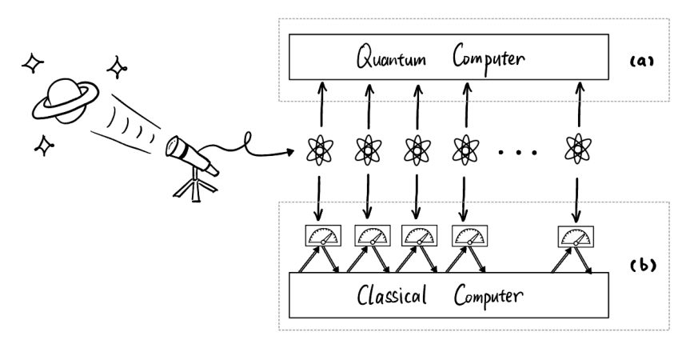
<figcaption class="paper-figure-caption"><b>Fig 1.</b> Figure 1: Illustration of entangled vs. non-entangled learning schemes. An experimental device (on the left) generates many i.i.d. copies of an unknown quantum state of interest, which can be processed in two different ways: (a) With a quantum computer, one can conduct entangled measurements across all copies, which is the most powerful measurement allowed by quantum mechanics; (b) With a classical computer only, one can conduct only single-copy non-entangled measurements. Note that each measurement may be chosen adaptively based on outcomes of previous measurements.</figcaption>
</figure>
<figure class="paper-figure-card">
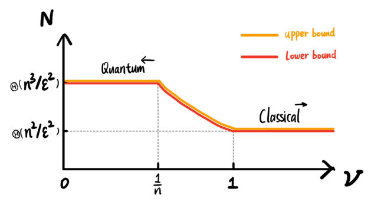
<figcaption class="paper-figure-caption"><b>Fig 2.</b> Figure 2: Quantum-to-classical crossover in the learnability of bosonic Gaussian states. The vertical axis denotes the sample complexity for learning to ε trace distance with 2/3 probability using single-copy (i.e. non-entangled) measurements. The horizontal axis denotes a minimal-temperature parameter ν such that the family of Gaussian states is promised to satisfy Σ ≥( 1</figcaption>
</figure>
<figure class="paper-figure-card">
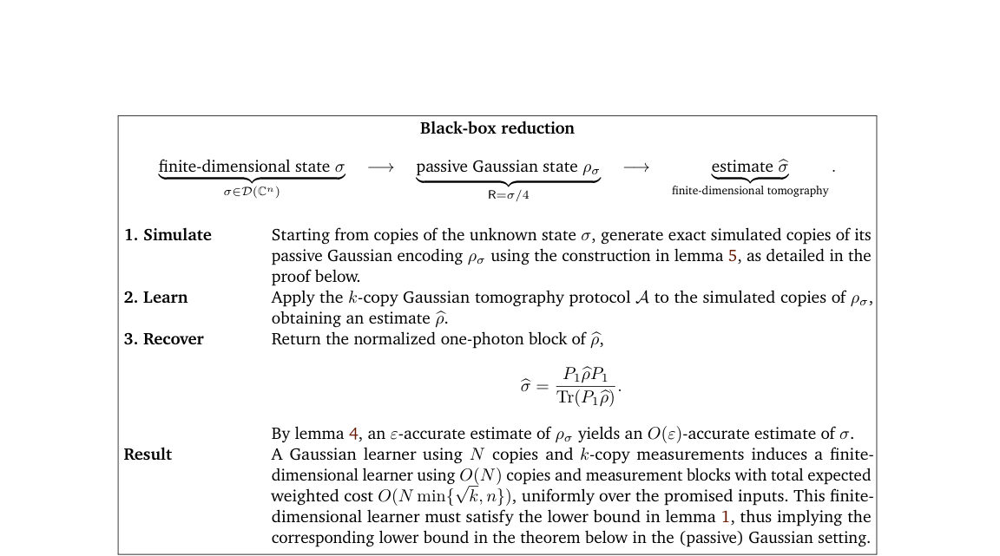
<figcaption class="paper-figure-caption"><b>Fig 3.</b> Figure 3: Main steps of the black-box reduction in theorem 4 from finite-dimensional tomography to passive Gaussian-state tomography. A tomography protocol for the encoded passive Gaussian state ρσ can be used as a subroutine to learn the underlying finite-dimensional state σ.</figcaption>
</figure>
</div>

<p><strong>Summary.</strong> This work determines the conditions under which the quantum state of a bosonic field can be estimated using classical learning resources. It finds a sharp crossover: states near vacuum (cold) are fundamentally hard to learn, requiring exponentially more samples than classical states, while states with significant thermal excitation (warm) behave classically in terms of sample complexity.</p>
<p><strong>Why it may be interesting.</strong> It provides a rigorous, quantitative link between the physical concept of thermal excitation (a key concept in open quantum systems and quantum optics) and the computational difficulty of state estimation, which is highly relevant for quantum sensing.</p>
<details>
<summary>Detailed structure</summary>
<p><strong>Main problem.</strong> The paper addresses the fundamental question of when bosonic Gaussian states become 'classical to learn,' comparing their sample complexity to that of classical Gaussian distributions.</p>
<p><strong>Main result.</strong> Bosonic Gaussian states are classical to learn if their thermal fluctuations are sufficiently large ($
u = \Omega(1)$), allowing the sample complexity to match the classical $\Theta(n^2)$ scaling.</p>
<p><strong>Method.</strong> The analysis uses a learning-theoretic perspective, comparing the required sample complexity ($N$) for quantum state tomography (using single-copy measurements) against the known classical bounds.</p>
<p><strong>Model / system.</strong> The system under study is the $n$-mode bosonic Gaussian state, characterized by its covariance matrix $\Sigma$ and governed by quantum field theory concepts.</p>
<p><strong>Key observables.</strong> Sample complexity ($N$), covariance matrix ($\Sigma$), and the thermal fluctuation parameter ($
u$).</p>
<p><strong>Important parameters / regimes.</strong> The crossover is governed by the thermal fluctuation parameter $
u$: cold states ($\Sigma \approx I/2$) are hard to learn ($\Omega(n^3)$), while warm states ($
u &gt; 0$) are easier ($\Theta(n^2)$ for $
u=\Omega(1)$).</p>
<p><strong>Assumptions / limitations.</strong> The analysis assumes measurements are restricted to single-copy (non-entangled) measurements, which is a practical constraint in many sensing experiments.</p>
<p><strong>Figures summary.</strong> Figure 1 illustrates the difference in sample complexity between entangled vs. non-entangled learning schemes. Figure 2 shows the sample complexity scaling $N$ as a function of the thermal parameter $
u$, demonstrating the crossover.</p>
<p><strong>Paper structure.</strong> The paper establishes the problem by defining the quantum-classical boundary in learnability. It then derives bounds showing $\Omega(n^3)$ complexity for cold states and $\Theta(n^2)$ complexity for warm states, culminating in a characterization of the crossover.</p>
</details>
<details>
<summary>Abstract</summary>
<p>A fundamental question in physics is: When does classical behavior emerge from quantum systems? Bosonic Gaussian states provide a natural setting to explore this quantum-classical boundary, as they capture both the classical field behavior and the intrinsic quantum nature of light. Here, we address this problem from a learning-theoretic perspective by asking: When are bosonic Gaussian states classical to learn? That is, under what conditions (if any) can an n-mode bosonic Gaussian state be learned with as few samples, and with operations as simple, as are needed to learn a classical 2n-variate Gaussian distribution? We establish a smooth crossover in learnability governed by the state's thermal fluctuations:   - Cold Gaussian states are non-classical to learn: When the covariance matrix satisfies $Σ\le(\frac12+O(\frac1n))I$, i.e. close to the vacuum covariance, tomography under single-copy (i.e., non-entangled) measurements fundamentally requires $Ω(n^3)$ copies, strictly exceeding the sample complexity $Θ(n^2)$ of learning classical Gaussian distributions. We show that this hardness persists even when few-copy entangled measurements are allowed.   - Warm Gaussian states are classical to learn: When thermal fluctuations exceed the vacuum noise, parameterized by $Σ\ge(\frac12+ν)I$ for any parameter $ν>0$, we prove that single-copy tomography requires $N=Θ\left(n^2\min(n,1+ν^{-1})\right)$ copies. This bound is tight and is achieved by simple, non-adaptive, unentangled heterodyne measurements. Crucially, for $ν=Ω(1)$, the sample complexity drops to $Θ(n^2)$, matching the classical case.   Our results tightly characterize a quantum-to-classical crossover in the learnability of bosonic Gaussian states, reveal a novel connection between fundamental physics and statistical learning theory, and have implications for real-world sensing experiments.</p>
</details>
<p><sub><a href="#top">↑ back to top</a></sub></p>

<p><a id="paper-2609.26491"></a></p>
<h3 id="nonthermal-fixed-point-for-massless-scalar-field-theories"><a href="http://arxiv.org/abs/2609.26491v1">Nonthermal fixed point for massless scalar field theories</a></h3>
<p><strong>Authors:</strong> Viktoria Noel, Chuang Huang, Aleksandr N. Mikheev, Jürgen Berges<br>
<strong>Type:</strong> theory · <strong>Category:</strong> statistical mechanics · <strong>PDF:</strong> <a href="https://arxiv.org/pdf/2609.26491v1">https://arxiv.org/pdf/2609.26491v1</a><br>
<strong>Analysis basis:</strong> full PDF text, analyzed in chunks
<strong>Topic relevance:</strong> 🔥 <code>non-equilibrium universality</code> <strong>5/5</strong> · 🔥 <code>Keldysh / 2PI / non-Gaussian methods</code> <strong>4/5</strong> · <code>driven-dissipative phase transition</code> <strong>1/5</strong> · <code>methods for driven-dissipative</code> <strong>1/5</strong></p>
<div class="figure-strip-hint">↔ Scroll figures horizontally</div>
<div class="paper-figures-scroll">
<figure class="paper-figure-card">
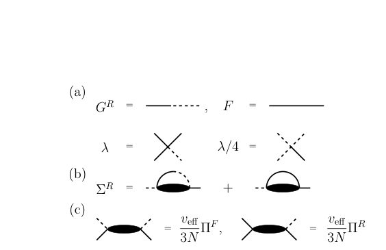
<figcaption class="paper-figure-caption"><b>Fig 1.</b> FIG. 1. Diagrammatically, the retarded propagator GR and F can be represented as shown in (a), along with the relevant interaction vertex. The diagrammatic expression for the self- energy is shown in (b) with (c) showing the resummations. The effective vertex veff sums the infinite chain of diagrams appearing at NLO in the 1/N expansion.</figcaption>
</figure>
<figure class="paper-figure-card">
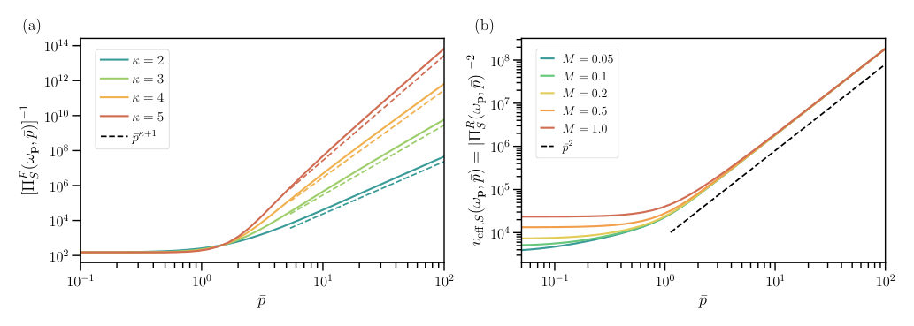
<figcaption class="paper-figure-caption"><b>Fig 2.</b> FIG. 2. The inverse of the one-loop function (a), [ΠF S (ωp, ¯p)]−1, is shown for 2 ≤κ ≤5. It exhibits a nearly constant form at low momenta, followed by a powerlaw at higher momenta. We determined this obeys ∼¯p1+κ. The effective vertex (b) for different mass values and κ = 4, using λ = 1. For low momenta ¯p, it is a mass-dependent constant which turns into a ¯p2</figcaption>
</figure>
<figure class="paper-figure-card">
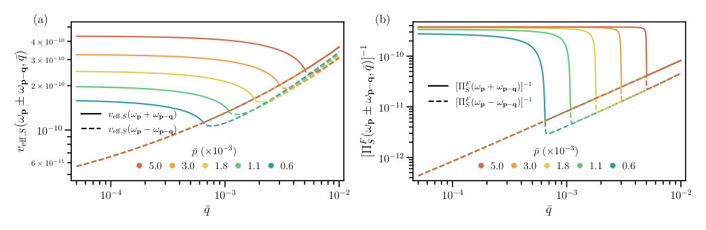
<figcaption class="paper-figure-caption"><b>Fig 3.</b> FIG. 3. The quantities entering the self-energy integrand (52), evaluated as functions of the loop-momentum ¯q for several values of the external momentum ¯p and κ = 4, on shell (ωp = ¯p). (a): The effective vertex veff,S(ωp ± ωp−q, ¯q) for the ωp + ωp−q (solid) and ωp −ωp−q (dashed) branches. (b): The inverse of the statistical one-loop function [ΠF S (ωp ± ωp−q, ¯q)]−1, with the same convention. Both quantities develop a steep edge near ¯q ∼¯p, which is responsible for the peaked structure of the self-energy integrand shown in Fig. 4(a).</figcaption>
</figure>
<figure class="paper-figure-card">
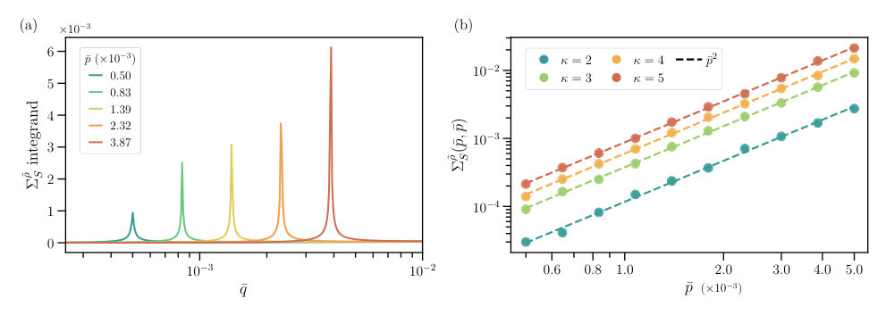
<figcaption class="paper-figure-caption"><b>Fig 4.</b> FIG. 4. (a): The integrand of the retarded self-energy for κ = 4, showing the sharp peaks developed at ¯p ∼¯q, and how the dominant integration region shifts gradually towards the infrared for decreasing external momentum ¯p. (b): The universal scaling of the spectral self-energy ∼¯p2 for ¯p ≳kIR. The data also verify that there is no κ-dependence in the scaling for the considered range of 2 ≤κ ≤5.</figcaption>
</figure>
<figure class="paper-figure-card">
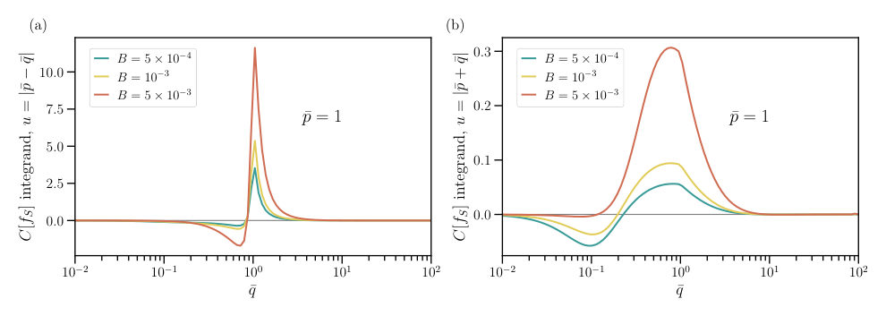
<figcaption class="paper-figure-caption"><b>Fig 5.</b> FIG. 5. The integrand of the collision integral (76) evaluated as a function of the loop-momentum ¯q at the two endpoints of the u-integration, (a) u = |¯p −¯q| and (b) u = |¯p + ¯q|, for κ = 3 at fixed ¯p = 1 and three values of B.</figcaption>
</figure>
</div>

<p><strong>Summary.</strong> This work calculates the universal scaling exponents for massless scalar field theories far from equilibrium by analyzing the non-perturbative infrared behavior. Using a large-N expansion, the authors find distinct scaling laws for energy versus particle number transport. The results highlight that relativistic and nonrelativistic theories belong to different universality classes in this non-equilibrium regime.</p>
<p><strong>Why it may be interesting.</strong> The findings on non-equilibrium scaling exponents and the distinction between relativistic and nonrelativistic universality classes are highly relevant for understanding far-from-equilibrium dynamics in quantum many-body systems, including those modeled by quantum gases.</p>
<details>
<summary>Detailed structure</summary>
<p><strong>Main problem.</strong> The paper investigates the universal scaling exponents and scaling functions for massless scalar field theories when driven far from equilibrium.</p>
<p><strong>Main result.</strong> It determines that the universal power-law tail exponent $\kappa$ for the distribution function is $d+1$ for energy transport and $d$ for effective particle number transport in $d=3$ dimensions.</p>
<p><strong>Method.</strong> The analysis employs a large-$N$ expansion to next-to-leading order within the 2PI effective action framework, analyzing self-similar scaling solutions.</p>
<p><strong>Model / system.</strong> The model is a relativistic scalar field theory with $O(N)$ symmetry, analyzed in $d$ spatial dimensions, considering the transport of energy or effective particle number.</p>
<p><strong>Key observables.</strong> The universal power-law tail $f_S(ar p) \sim 1/ar{p}^\kappa$ of the nonthermal scaling distribution function, and the scaling exponents $\kappa$.</p>
<p><strong>Important parameters / regimes.</strong> Spatial dimension $d$, the nature of transport (energy vs. particle number), and the massless dispersion relation ($\omega = ar{p}$).</p>
<p><strong>Assumptions / limitations.</strong> The analysis assumes spatially homogeneous and isotropic systems, and relies on the existence of self-similar scaling solutions in the classical-statistical limit.</p>
<p><strong>Figures summary.</strong> Figure 1 diagrammatically shows the retarded propagator $G_R$ and statistical function $F$, along with the diagrammatic expression for the self-energy $\Sigma_R$.</p>
<p><strong>Paper structure.</strong> The paper proceeds by setting up the field theory, deriving equations of motion for correlation functions, applying scaling assumptions to find fixed-point equations, and finally solving for the universal exponents based on conservation laws.</p>
</details>
<details>
<summary>Abstract</summary>
<p>We compute universal scaling exponents and scaling functions for massless scalar field theories far from equilibrium. Using a large-$N$ expansion to next-to-leading order, we investigate the nonperturbative infrared behaviour associated with the transport of a) energy or b) effective particle number towards low frequencies $ω$ and momenta $\bar p$. For massless dispersion $ω= \bar{p}$, we determine the scaling form of the distribution function whose universal power-law tail $f_S(\bar p) \sim 1/\bar{p}^κ$ is found to be a) $κ= d+1$ and b) $κ= d$ in $d=3$ spatial dimensions. Our results establish that relativistic and nonrelativistic theories do not belong to the same universality class in this case, which opens up new applications to far-from-equilibrium phenomena in high-energy and (quantum) many-body physics with linear dispersions.</p>
</details>
<p><sub><a href="#top">↑ back to top</a></sub></p>

<p><a id="paper-2609.25359"></a></p>
<h3 id="superradiant-mpemba-relaxation-in-a-dicke-ladder"><a href="http://arxiv.org/abs/2609.25359v1">Superradiant Mpemba Relaxation in a Dicke Ladder</a></h3>
<p><strong>Authors:</strong> Matheus G. H. Santos, Hugo Sanchez, Italo M. de Araújo, Luis Felipe A. da Silva, Miled H. Y. Moussa, Norton G. de Almeida<br>
<strong>Type:</strong> theory · <strong>Category:</strong> other · <strong>PDF:</strong> <a href="https://arxiv.org/pdf/2609.25359v1">https://arxiv.org/pdf/2609.25359v1</a><br>
<strong>Analysis basis:</strong> full PDF text, analyzed in chunks
<strong>Topic relevance:</strong> 🔥 <code>Dicke superradiance</code> <strong>4/5</strong> · 🔥 <code>correlated / nonlocal dissipation</code> <strong>4/5</strong> · <code>Tavis-Cummings &amp; cavity-many-emitter</code> <strong>3/5</strong> · <code>driven-dissipative phase transition</code> <strong>3/5</strong> · <code>non-equilibrium universality</code> <strong>3/5</strong> · <code>methods for driven-dissipative</code> <strong>2/5</strong> · <code>superradiant laser</code> <strong>2/5</strong> · <code>Keldysh / 2PI / non-Gaussian methods</code> <strong>1/5</strong> · <code>analog quantum simulation</code> <strong>1/5</strong></p>
<div class="figure-strip-hint">↔ Scroll figures horizontally</div>
<div class="paper-figures-scroll">
<figure class="paper-figure-card">
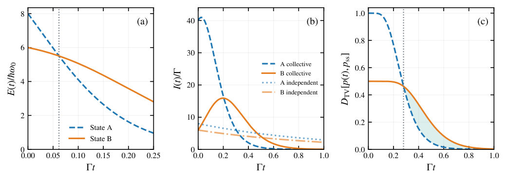
<figcaption class="paper-figure-caption"><b>Fig 1.</b> FIG. 1. Superradiant Mpemba relaxation for N = 12. (a) Excitation energies; the dotted line marks Γt× E ≃0.0617. (b) Collective emission rates and independent-emitter references. (c) Trace distances to the stationary ground state; the dotted line marks Γt× D ≃0.2798, and the shaded region indicates the reversed ordering DA &lt; DB.</figcaption>
</figure>
<figure class="paper-figure-card">
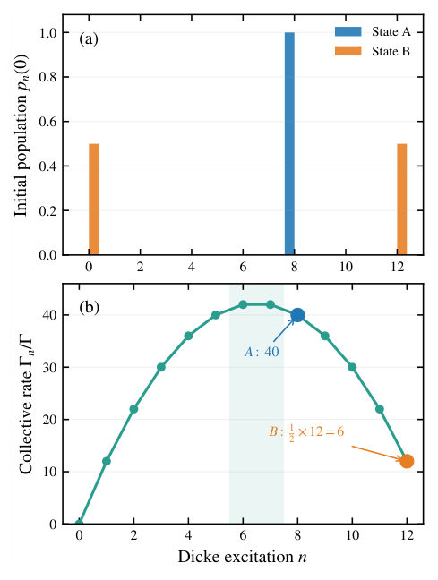
<figcaption class="paper-figure-caption"><b>Fig 2.</b> FIG. 2. Kinetic mechanism for N = 12. (a) Initial Dicke populations of the sparse pair. (b) Collective rate profile Γn/Γ = n(13 −n). State A begins in a highly radiative level, whereas the emitting component of B begins at the upper boundary. The labels include the initial population weights, giving IA(0)/Γ = 40 and IB(0)/Γ = 6.</figcaption>
</figure>
<figure class="paper-figure-card">
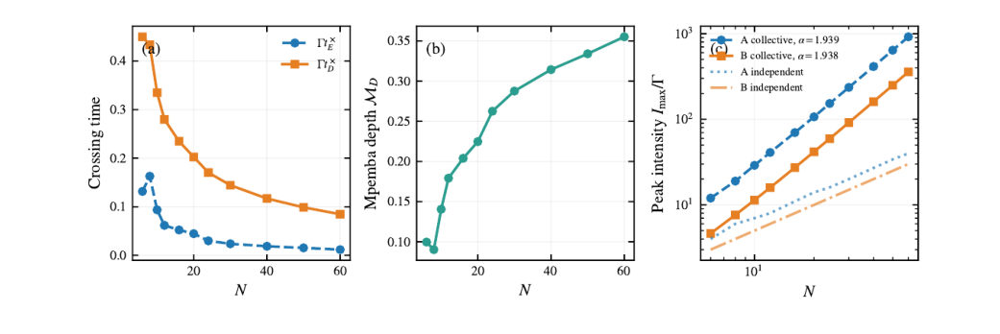
<figcaption class="paper-figure-caption"><b>Fig 3.</b> FIG. 3. System-size dependence of the sparse family. (a) Energy- and trace-distance crossing times. (b) Maximum trace-distance inversion. (c) Collective peak intensities and independent-emitter references. Log–log fits for N ≥12 yield the finite-size exponents 1.939 for A and 1.938 for B.</figcaption>
</figure>
</div>

<p><strong>Summary.</strong> This theoretical study demonstrates a 'superradiant Mpemba relaxation' in a system of coupled two-level emitters. The authors show that the anomalous crossing of relaxation rates occurs when collective superradiant emission is active, a feature that vanishes if the emitters decay independently. This highlights the crucial role of collective quantum kinetics in non-equilibrium relaxation processes.</p>
<p><strong>Why it may be interesting.</strong> This work directly addresses non-equilibrium dynamics in open quantum systems, linking the non-trivial phenomenon of the Mpemba effect to the collective quantum dynamics characteristic of superradiance, which is highly relevant to cavity QED and quantum optics.</p>
<details>
<summary>Detailed structure</summary>
<p><strong>Main problem.</strong> The paper investigates whether the anomalous Mpemba effect—where a state initially farther from equilibrium overtakes a closer one during relaxation—can coexist with superradiant emission in a quantum system.</p>
<p><strong>Main result.</strong> A superradiant Mpemba relaxation is demonstrated in a Dicke ladder system, where the crossing occurs in both energy and trace distance, a phenomenon absent under independent decay.</p>
<p><strong>Method.</strong> The dynamics are analyzed by solving the master equation for the population cascade of two-level emitters coupled to a reservoir, comparing specific sparse initial states.</p>
<p><strong>Model / system.</strong> The system consists of $N$ identical two-level emitters coupled to a common zero-temperature reservoir, modeled within the symmetric Dicke manifold. The dynamics are governed by a master equation incorporating collective decay rates.</p>
<p><strong>Key observables.</strong> Excitation Energy, Collective Emission Rate, and Trace Distance to Stationarity ($D(t)$).</p>
<p><strong>Important parameters / regimes.</strong> System size $N$ (tested from 6 to 60), and the comparison between collective vs. independent decay kinetics.</p>
<p><strong>Assumptions / limitations.</strong> The analysis assumes permutation symmetry, zero temperature, and negligible individual decay or dephasing outside the symmetric Dicke sector.</p>
<p><strong>Figures summary.</strong> Figures illustrate the crossing in energy and trace distance, the comparison between collective and independent emission peaks, and the system-size dependence of these crossing times and peak intensities.</p>
<p><strong>Paper structure.</strong> The paper establishes the physical model and dynamics, defines the specific initial states ($
ho_A$ and $
ho_B$), calculates the time evolution of key observables (Energy, Distance), and finally demonstrates the persistent crossing and its dependence on collective coupling.</p>
</details>
<details>
<summary>Abstract</summary>
<p>The Mpemba effect occurs when a state initially farther from stationarity overtakes a closer one during relaxation. We show that this anomalous ordering can coexist with superradiant emission in a collectively damped ensemble of two-level systems. In the symmetric Dicke manifold, zero-temperature decay is a population cascade with rates $Γn(N-n+1)$. We construct the sparse family $ρ_A=|\lceil2N/3\rceil\rangle\langle\lceil2N/3\rceil|$ and $ρ_B=(|0\rangle\langle0|+|N\rangle\langle N|)/2$. Although $A$ is initially more energetic and more distant from the stationary ground state, it crosses $B$ in both energy and trace distance because it starts in a more radiative region of the Dicke ladder. Both states develop emission peaks larger than their independent-emitter references. The crossing persists for all examined sizes from $N=6$ to $60$, while the peak intensities show an effective scaling close to $N^2$. The same pair has no crossing under independent decay, identifying collective radiative kinetics as the origin of the effect.</p>
</details>
<p><sub><a href="#top">↑ back to top</a></sub></p>

<p><a id="paper-2609.26453"></a></p>
<h3 id="hilbert-space-fragmentation-selects-channels-of-strong-to-weak-spontaneous-symmetry-breaking"><a href="http://arxiv.org/abs/2609.26453v1">Hilbert-space fragmentation selects channels of strong-to-weak spontaneous symmetry breaking</a></h3>
<p><strong>Authors:</strong> Mingdi Xu, Kaixiang Lu, Daoguang Li, Lei Pan<br>
<strong>Type:</strong> theory · <strong>Category:</strong> statistical mechanics · <strong>PDF:</strong> <a href="https://arxiv.org/pdf/2609.26453v1">https://arxiv.org/pdf/2609.26453v1</a><br>
<strong>Analysis basis:</strong> full PDF text, analyzed in chunks
<strong>Topic relevance:</strong> 🔥 <code>scars &amp; prethermalization</code> <strong>4/5</strong> · <code>correlated / nonlocal dissipation</code> <strong>3/5</strong> · <code>driven-dissipative phase transition</code> <strong>3/5</strong> · <code>methods for driven-dissipative</code> <strong>3/5</strong> · <code>Keldysh / 2PI / non-Gaussian methods</code> <strong>2/5</strong> · <code>non-equilibrium universality</code> <strong>2/5</strong> · <code>analog quantum simulation</code> <strong>1/5</strong> · <code>quantum measurements</code> <strong>1/5</strong></p>
<div class="figure-strip-hint">↔ Scroll figures horizontally</div>
<div class="paper-figures-scroll">
<figure class="paper-figure-card">
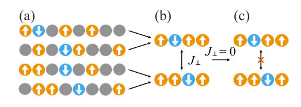
<figcaption class="paper-figure-caption"><b>Fig 1.</b> FIG. 1. Spin-word fragmentation on an open chain. (a) Orange and blue disks denote up and down spins; gray disks denote holes. Deleting the holes maps the four configurations onto two words. (b) Transverse spin exchange connects words with the same global charges. The word-space arrow denotes connectivity through hopping and transverse exchange; it need not be a direct transition between the displayed real-space configurations. (c) At J⊥= 0, hopping preserves each word. The red cross marks the forbidden transverse-exchange link. The illustrated sector has L = 8, N↑= 3, and N↓= 1; it is separate from the balanced sector used in Fig. 4.</figcaption>
</figure>
<figure class="paper-figure-card">
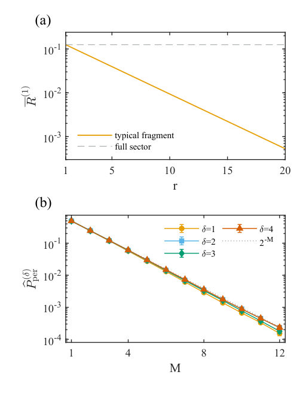
<figcaption class="paper-figure-caption"><b>Fig 2.</b> FIG. 2. Suppression of local nonlinear order in typical frag- ments. (a) Thermodynamic analytic single-particle result 1 8(3/4)r−1 and complete-sector reference 1/8 at ν = p = 1/2. (b) Mean fraction bP (δ) per of rank windows satisfying M con- secutive equalities wj = wj+δ, from 5000 uniformly sampled balanced words of length N = 128, with M = 1, . . . , 12 and δ = 1, 2, 3, 4. Bars give the standard error across words, and solid lines connect neighboring integer values of M as guides to the eye. The dotted reference 2−M is the balanced N →∞ limit; the exact finite-N fixed-composition mean is given by Eq. (F5). This statistic tests a necessary word constraint and differs from the correlator...</figcaption>
</figure>
<figure class="paper-figure-card">
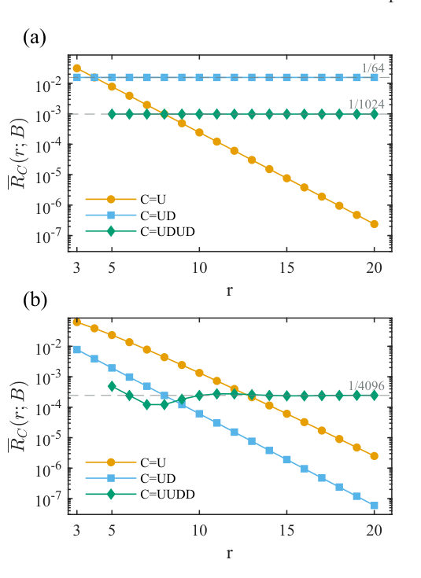
<figcaption class="paper-figure-caption"><b>Fig 3.</b> FIG. 3. Primitive spin-word periods select composite SWSSB channels. Markers show exact thermodynamic source-averaged configuration counts at ν = p = 1/2. (a) In B = UD, the C = U channel decays, while C = UD and UDUD have plateaus 1/64 and 1/1024. The minimum ordered support is Kmin = 2. (b) In B = UUDD, the same U and UD channels decay, whereas C = UUDD approaches 1/4096 and Kmin = 4. Solid lines connect neighboring integer separations only as guides to the eye, and dashed lines mark the analytic plateaus. The oscillation in (b) follows from exact gap counting; these data have no sampling uncertainty. The background period is k = |B| and the transferred motif length is ℓ= |C|. The markers...</figcaption>
</figure>
<figure class="paper-figure-card">
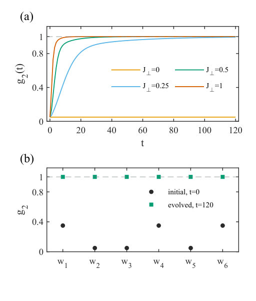
<figcaption class="paper-figure-caption"><b>Fig 4.</b> FIG. 4. Finite-size restoration of sector correlations by trans- verse exchange. Parameters are L = 8, N↑= N↓= 2, th = 1, Jz = 0.7, and γ = 1, with source-target separa- tion r = 4; g2 uses Rsec(8) = 1/7. (a) The curves use J⊥= 0, 0.25, 0.5, 1. Starting from ρUDUD, g2 = 1/20 stays constant at J⊥= 0, while nonzero exchange drives it to- ward 1. Each solid curve joins 121 density-matrix evalua- tions at t = 0, 1, . . . , 120. (b) Black dots show g2(0) and green squares show g2(120) at J⊥= 1, for (w1, . . . , w6) = (UUDD, UDUD, UDDU, DUUD, DUDU, DDUU). Their initial values depend on the fragment, whereas the evolved values approach the same sector reference. These finite-size data illustrate...</figcaption>
</figure>
<figure class="paper-figure-card">
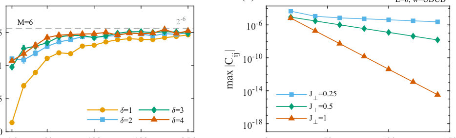
<figcaption class="paper-figure-caption"><b>Fig 5.</b> FIG. 5. Word-statistics and ordinary-coherence controls. (a) Balanced words (p = 1/2) with M = 6, δ = 1, 2, 3, 4, and N = 16, 32, . . . , 256. The mean fraction of valid periodic rank windows approaches 2−6 as N grows. The N = 16 means are exact averages over all 16 8  = 12870 balanced words and have no sampling error bars; at each larger N, the means are estimated from 5000 sampled words and shown with standard-error bars. Markers give the values at each listed N, and solid lines connect adjacent values as guides to the eye. This limit removes fixed-composition corrections and does not measure decay of a spatial correlator; Eq. (F5) gives the exact finite-N reference. (b) Maximum...</figcaption>
</figure>
</div>

<p><strong>Summary.</strong> This paper analyzes spontaneous symmetry breaking in a dephasing quantum chain where the Hilbert space fragments. By using nonlinear correlation functions, the authors prove that most fragments lose long-range order, while only specific channels dictated by the periodicity of the conserved 'spin word' can sustain residual order. This highlights how local constraints can select specific, robust physical channels even when global order is lost.</p>
<p><strong>Why it may be interesting.</strong> This work provides a sophisticated diagnostic tool (nonlinear correlators) to probe subtle forms of symmetry breaking in non-equilibrium, open quantum systems, linking microscopic constraints (spin words) to macroscopic order parameters.</p>
<details>
<summary>Detailed structure</summary>
<p><strong>Main problem.</strong> The study investigates Strong-to-Weak Spontaneous Symmetry Breaking (SWSSB) in quantum systems whose Hilbert space fragments into dynamically disconnected subspaces beyond simple global charge conservation.</p>
<p><strong>Main result.</strong> The analysis shows that while the full system can retain long-range order via transverse exchange, typical, isolated fragments fail to support conventional two-point nonlinear order, except for specific channels dictated by the fragment's underlying spin-word periodicity.</p>
<p><strong>Method.</strong> The authors use nonlinear correlators, specifically fidelity and Rényi-1 order, to diagnose symmetry breaking, comparing results derived from the full-state dynamics versus those restricted to individual word fragments.</p>
<p><strong>Model / system.</strong> The model is a one-dimensional t-Jz chain subjected to species-resolved dephasing, governed by a Lindblad master equation. The dynamics are analyzed based on the conservation of a 'spin word' when the system fragments.</p>
<p><strong>Key observables.</strong> Fidelity ($F_O$), Rényi-1 correlators ($R_{1,O}$), and the Rényi-2 diagnostic ($g_2(t)$) are used to quantify the degree of spontaneous symmetry breaking and long-range order.</p>
<p><strong>Important parameters / regimes.</strong> The key parameters include the periodicity ($k$) of the conserved spin word, the gap size ($r$), and the coupling strength $J_\perp$ which connects the fragments.</p>
<p><strong>Assumptions / limitations.</strong> The analysis distinguishes between the order supported by the full sector (global charge) and the order supported by individual, fixed-composition word fragments.</p>
<p><strong>Figures summary.</strong> Figures illustrate the spin-word fragmentation pattern, compare the suppression of local nonlinear order in typical fragments versus the full sector, and show how transverse exchange restores sector correlations.</p>
<p><strong>Paper structure.</strong> The paper progresses by first defining the physical model and the concept of word fragmentation, then using nonlinear correlators to prove the absence of order in typical fragments, and finally identifying the specific, periodic channels that can support residual order.</p>
</details>
<details>
<summary>Abstract</summary>
<p>Strong-to-weak spontaneous symmetry breaking (SWSSB) can occur in a maximally mixed charge sector even when ordinary charged correlations vanish. We study this order when a charge sector splits into dynamically disconnected fragments. In a one-dimensional $t$-$J_z$ chain with species-resolved dephasing, each fragment is labeled by a conserved spin word. A charged transfer between separated finite intervals preserves that word only if the intervening spins satisfy a periodicity constraint. In the full-state two-point sense, we use this constraint to prove the absence of long-range fidelity and Rényi-1 order in typical fixed-composition fragments, uniformly over all norm-bounded charged operators in any prescribed finite interval. A fragment with primitive spin-word period $k$ supports a $k$-particle channel with exact long-distance value $ν^k(1-ν)^k/k^2$, and no charged operator on fewer than $k$ sites can carry this order. A transverse exchange connects the fragments while preserving the global charges and restores the full-sector steady state at finite size. The conserved spin word therefore selects the local channels that can support mixed-state order.</p>
</details>
<p><sub><a href="#top">↑ back to top</a></sub></p>

<p><a id="paper-2609.25227"></a></p>
<h3 id="localized-decoherence-as-a-constructive-tool-an-optical-simulation-of-matter-wave-interference"><a href="http://arxiv.org/abs/2609.25227v1">Localized Decoherence as a Constructive Tool: An Optical Simulation of Matter-Wave Interference</a></h3>
<p><strong>Authors:</strong> Hadis Torbatiyan, Bedir Halcı, Adrian Udovičić, Lara Ulčakar, Rainer Kaltenbaek<br>
<strong>Type:</strong> both · <strong>Category:</strong> other · <strong>PDF:</strong> <a href="https://arxiv.org/pdf/2609.25227v1">https://arxiv.org/pdf/2609.25227v1</a><br>
<strong>Analysis basis:</strong> full PDF text, analyzed in chunks
<strong>Topic relevance:</strong> 🔥 <code>interference shaping light</code> <strong>4/5</strong> · <code>correlated / nonlocal dissipation</code> <strong>3/5</strong> · <code>quantum optics experiment</code> <strong>3/5</strong> · <code>analog quantum simulation</code> <strong>2/5</strong> · <code>driven-dissipative phase transition</code> <strong>2/5</strong> · <code>methods for driven-dissipative</code> <strong>2/5</strong> · <code>quantum measurements</code> <strong>2/5</strong> · <code>non-equilibrium universality</code> <strong>1/5</strong></p>
<div class="figure-strip-hint">↔ Scroll figures horizontally</div>
<div class="paper-figures-scroll">
<figure class="paper-figure-card">
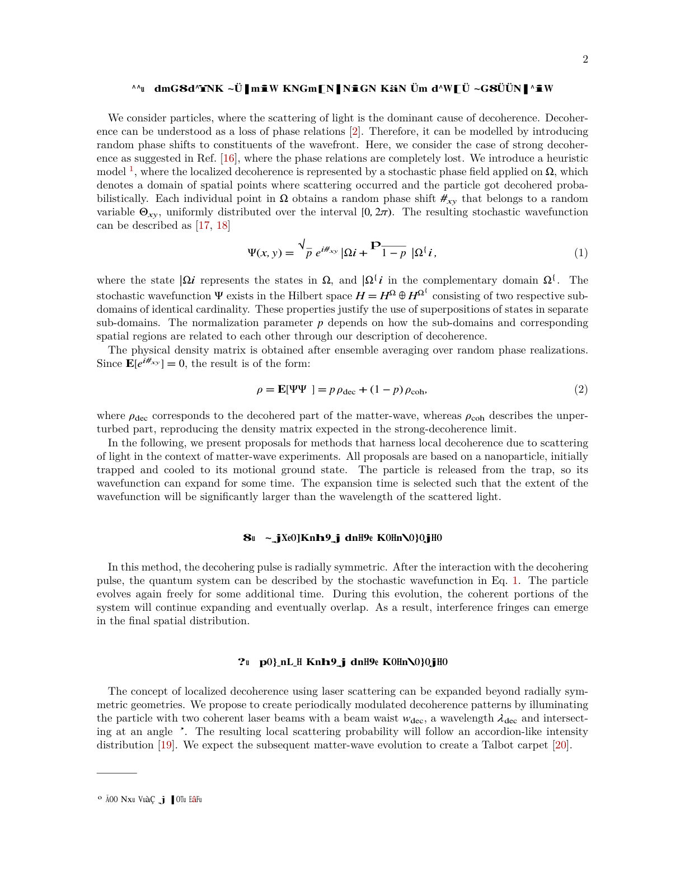
<figcaption class="paper-figure-caption"><b>Fig 1.</b> Low-resolution page preview, page 2</figcaption>
</figure>
<figure class="paper-figure-card">
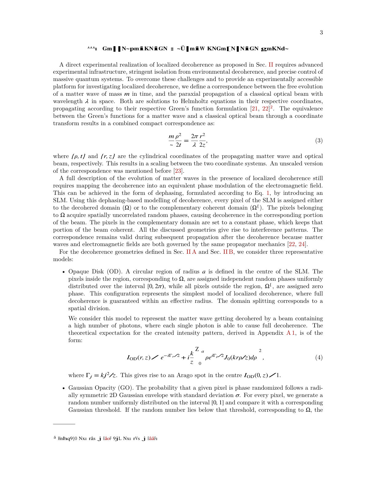
<figcaption class="paper-figure-caption"><b>Fig 2.</b> Low-resolution page preview, page 3</figcaption>
</figure>
<figure class="paper-figure-card">
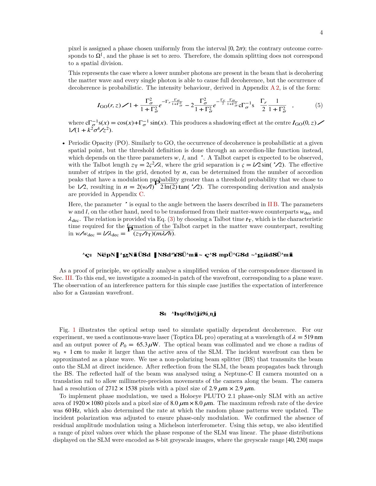
<figcaption class="paper-figure-caption"><b>Fig 3.</b> Low-resolution page preview, page 4</figcaption>
</figure>
<figure class="paper-figure-card">
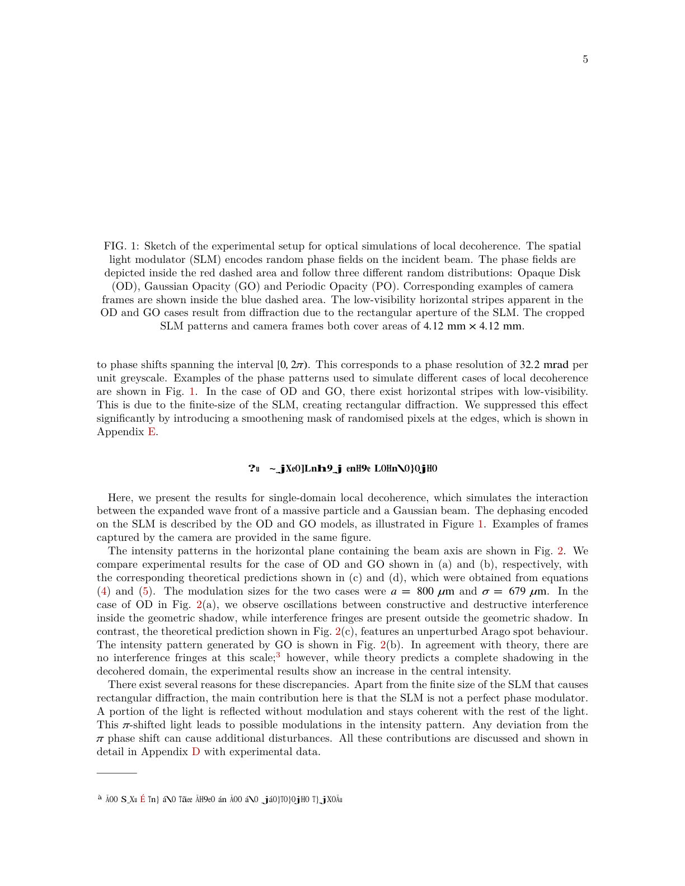
<figcaption class="paper-figure-caption"><b>Fig 4.</b> Low-resolution page preview, page 5</figcaption>
</figure>
<figure class="paper-figure-card">
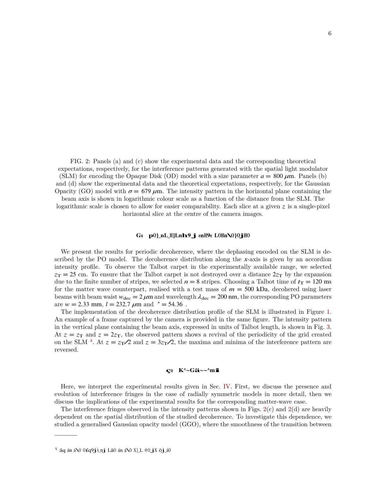
<figcaption class="paper-figure-caption"><b>Fig 5.</b> Low-resolution page preview, page 6</figcaption>
</figure>
</div>

<p><strong>Summary.</strong> This research demonstrates that localized decoherence is not merely a source of noise but can be harnessed as a functional resource in quantum interferometry. By simulating matter-wave interference using optical beams modulated by random phase patterns, the authors confirm that specific decoherence profiles yield predictable and controllable interference patterns. This establishes a new paradigm for quantum state engineering using controlled decoherence.</p>
<p><strong>Why it may be interesting.</strong> This work directly bridges quantum foundations (decoherence) with experimental quantum optics, providing a concrete, controllable method to generate and test complex quantum states using optical tools.</p>
<details>
<summary>Detailed structure</summary>
<p><strong>Main problem.</strong> The paper explores the counter-intuitive idea that spatially localized decoherence, usually seen as detrimental, can be actively exploited as a constructive tool for matter-wave interferometry.</p>
<p><strong>Main result.</strong> The simulations and experiments confirm that localized decoherence can generate measurable interference patterns, providing a novel resource for engineering arbitrary spatial superpositions of massive particles.</p>
<p><strong>Method.</strong> The study uses an optical simulation approach, mapping the physics of matter-wave interference onto the paraxial propagation of classical optical beams modulated by a Spatial Light Modulator (SLM).</p>
<p><strong>Model / system.</strong> The system involves matter-wave interferometry simulated optically, comparing theoretical predictions for different decoherence profiles: Opaque Disk (OD), Gaussian Opacity (GO), and Periodic Opacity (PO).</p>
<p><strong>Key observables.</strong> Interference intensity patterns (e.g., Arago spot, Talbot carpets), central intensity at the beam axis, and the visibility of interference fringes.</p>
<p><strong>Important parameters / regimes.</strong> Decoherence parameters ($\sigma$, $a$), propagation distance ($z$), and experimental parameters like SLM efficiency ($\eta$) and phase deviation ($\epsilon$).</p>
<p><strong>Assumptions / limitations.</strong> The primary assumption is the validity of the correspondence between matter-wave evolution and optical beam propagation, though discrepancies in fitting suggest limitations in the model equations used.</p>
<p><strong>Figures summary.</strong> Figures compare experimental measurements of interference patterns (OD, GO, PO) against theoretical predictions, often including fits that account for experimental imperfections like SLM efficiency.</p>
<p><strong>Paper structure.</strong> The paper progresses from establishing the theoretical framework linking decoherence to interference, through detailed modeling of various decoherence geometries (OD, GO, PO), and culminates in comparing these models against quantitative experimental data and fitting observed deviations.</p>
</details>
<details>
<summary>Abstract</summary>
<p>Decoherence is conventionally regarded as a detrimental process that suppresses quantum coherence and limits the performance of quantum technologies. Contrary to this view, we show that spatially localized decoherence can instead be exploited as an interferometric tool. Beyond its conceptual implications, localized decoherence provides a novel approach to prepare arbitrary macroscopic spatial superpositions for testing quantum physics with massive particles. We demonstrate the proof of principle by making use of the correspondence between optics and matter-waves through the equivalence of the respective propagation functions. By employing stochastic phase fields to the optical counterpart to model the decoherence, our experiments confirm the expected interference. The results establish localized decoherence as a resource for quantum state engineering.</p>
</details>
<p><sub><a href="#top">↑ back to top</a></sub></p>

<p><a id="paper-2609.26372"></a></p>
<h3 id="lattice-lindbladian-simulation-by-patching-and-merging"><a href="http://arxiv.org/abs/2609.26372v1">Lattice Lindbladian simulation by patching and merging</a></h3>
<p><strong>Authors:</strong> Kaoru Mizuta<br>
<strong>Type:</strong> theory · <strong>Category:</strong> quantum information and computing · <strong>PDF:</strong> <a href="https://arxiv.org/pdf/2609.26372v1">https://arxiv.org/pdf/2609.26372v1</a><br>
<strong>Analysis basis:</strong> full PDF text, analyzed in chunks
<strong>Topic relevance:</strong> 🔥 <code>methods for driven-dissipative</code> <strong>4/5</strong> · <code>correlated / nonlocal dissipation</code> <strong>3/5</strong> · <code>driven-dissipative phase transition</code> <strong>3/5</strong> · <code>Keldysh / 2PI / non-Gaussian methods</code> <strong>2/5</strong> · <code>non-equilibrium universality</code> <strong>2/5</strong> · <code>analog quantum simulation</code> <strong>1/5</strong> · <code>quantum measurements</code> <strong>1/5</strong></p>
<div class="figure-strip-hint">↔ Scroll figures horizontally</div>
<div class="paper-figures-scroll">
<figure class="paper-figure-card">
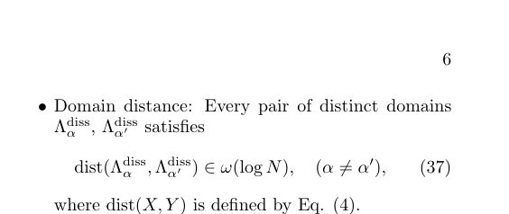
<figcaption class="paper-figure-caption"><b>Fig 1.</b> Figure 1 (b) shows the schematic picture of sparsely dissipative systems satisfying the above definition. Im- portantly, they include boundary-driven systems, where the dissipation is located around the left and right bound- aries like Fig. 1 (c). Boundary-driven systems are typical targets in open quantum many-body systems [43], and hence the first algorithm has broad utility in nonequi- librium physics. We develop a near-optimal quantum algorithm for sparsely dissipative systems, whose cost is given by the following theorem.</figcaption>
</figure>
<figure class="paper-figure-card">
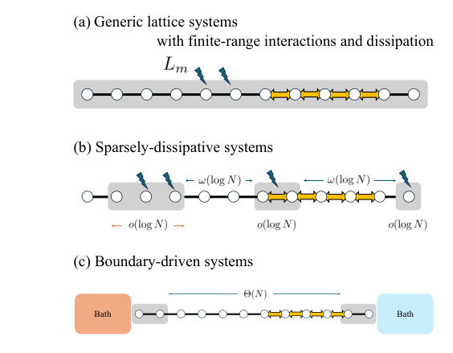
<figcaption class="paper-figure-caption"><b>Fig 2.</b> FIG. 1. Schematic picture of the system. (a) Generic sys- tems addressed by Algorithm 2. (b) Sparsely dissipative sys- tems satisfying Definition 1, and addressed by Algorithm 1. (c) Boundary-driven systems as a typical example of sparsely dissipative systems. We consider high-dimensional systems in Appendix C.</figcaption>
</figure>
<figure class="paper-figure-card">
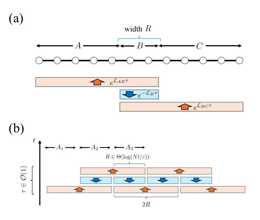
<figcaption class="paper-figure-caption"><b>Fig 3.</b> FIG. 2. (a) Patching lemma for the Lindbladian system. (b) The decomposition used in the HHKL algorithm.</figcaption>
</figure>
<figure class="paper-figure-card">
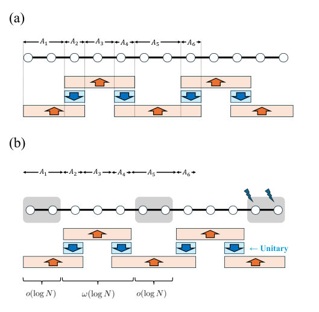
<figcaption class="paper-figure-caption"><b>Fig 4.</b> FIG. 3. (a) The patching lemma with the flexible block sizes, given by Corollary 7. (b) The patching strategy for the sparsely dissipative systems. We set the domains A2, A4, · · · so that they can avoid the sites subject to the dissipation.</figcaption>
</figure>
<figure class="paper-figure-card">
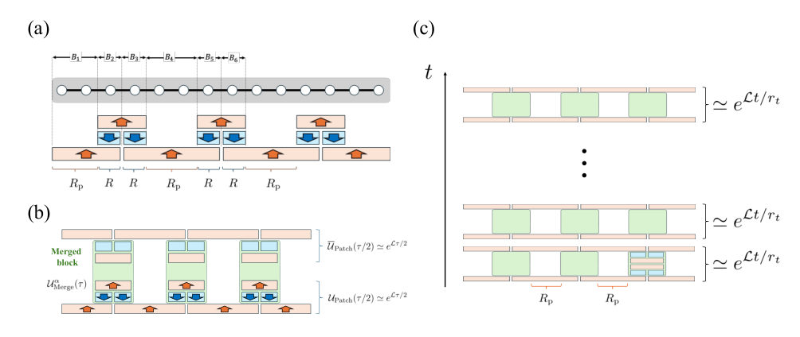
<figcaption class="paper-figure-caption"><b>Fig 5.</b> FIG. 4. (a) The patching strategy for generic local Lindbladians, giving UPatch(τ) by Eq. (97). We optimize the block size Rp to minimize the gate count while we set R ∈Θ(log(Nt/ε)). (b) The merging strategy based on Eqs. (103) and (104). The internal layers are merged and regarded as a set of disjoint green blocks with the size O(R). (c) The outline of Algorithm 2. We repeat the operation with the time τ = t/rt. The orange blocks with the size O(Rp) are reproduced by the LCU based approach for Lindbladian dynamics, while we use quasi-probabilistic sampling for the merged green blocks. The repetition number rt is determined so that the sampling overhead can be suppressed.</figcaption>
</figure>
</div>

<p><strong>Summary.</strong> This paper presents quantum algorithms to simulate the dynamics of dissipative quantum many-body systems described by Lindbladians. By exploiting the locality of the dissipation using novel 'patching' and 'merging' techniques, the authors achieve near-optimal gate counts for sparsely dissipative systems. This advances the field by providing scalable quantum tools for simulating open quantum dynamics.</p>
<p><strong>Why it may be interesting.</strong> This work directly addresses the simulation of open quantum systems, which is crucial for understanding decoherence and non-equilibrium dynamics in quantum computation and quantum simulation.</p>
<details>
<summary>Detailed structure</summary>
<p><strong>Main problem.</strong> The core problem is developing quantum algorithms to simulate the time evolution of dissipative quantum many-body systems governed by local Lindbladians.</p>
<p><strong>Main result.</strong> The authors establish near-optimal quantum algorithms for sparsely dissipative systems, achieving a gate count of O(Nt polylog(Nt/epsilon)), and present an algorithm for generic systems with a scaling of O((Nt)^(4/3) polylog(Nt/epsilon)).</p>
<p><strong>Method.</strong> The algorithms exploit locality using two key techniques: 'patching' to decompose dynamics into subsystems and 'merging' to absorb reversed dissipative dynamics, generalizing ideas from Hamiltonian simulation.</p>
<p><strong>Model / system.</strong> The system is a lattice ($\Lambda$) described by the Gorini-Kossakowski-Sudarshan-Lindblad (GKSL) master equation, $rac{d}{dt}
ho(t) = L
ho(t)$, where $L$ is the local Lindbladian.</p>
<p><strong>Key observables.</strong> Gate Count (primary efficiency metric), time-evolved state $
ho(t)$, and time-evolved observables $\langle O
angle
ho(t)$.</p>
<p><strong>Important parameters / regimes.</strong> System size ($N$), evolution time ($t$), and allowable error ($\epsilon$).</p>
<p><strong>Assumptions / limitations.</strong> The analysis relies heavily on the locality of the Lindbladians and the ability to decompose the evolution using patching and merging techniques.</p>
<p><strong>Figures summary.</strong> Figures illustrate the decomposition of the lattice into internal and external boundaries for high-dimensional systems, detailing the iterative steps of the patching and merging protocol.</p>
<p><strong>Paper structure.</strong> The paper progresses by first establishing the problem (Lindbladian simulation), then introducing the locality-exploiting techniques (patching/merging), and finally presenting the main theorems for sparsely dissipative and generic lattice Lindbladians, culminating in complexity analysis.</p>
</details>
<details>
<summary>Abstract</summary>
<p>Simulating the dynamics of dissipative quantum many-body systems governed by local Lindbladians is a fundamental task in quantum computation. While the near-optimal gate count has been achieved for Hamiltonian simulation, comparable results for Lindbladian simulation remain elusive. In this work, we develop quantum algorithms for lattice Lindbladians by exploiting their locality. First, we consider sparsely dissipative systems, in which the dissipation is sparsely located, including boundary-driven systems. We establish a near-optimal quantum algorithm for their dynamics with gate count $O(Nt \, \mathrm{polylog}(Nt/\varepsilon))$, where $N$ is the system size, $t$ is the evolution time, and $\varepsilon$ is the allowable error. We then consider generic lattice Lindbladians with finite-range interactions and dissipation, and develop an algorithm for simulating time-evolved observables with gate count $O((Nt)^{4/3} \, \mathrm{polylog}(Nt/\varepsilon))$ per sample with the sampling complexity $Θ(\varepsilon^{-2})$. The gate count has the smallest known dependence on the system size among algorithms retaining polylogarithmic dependence on $1/\varepsilon$. Our algorithms are based on two techniques that exploit locality: patching and merging. Patching decomposes dissipative dynamics into dynamics on subsystems with exponentially small error, generalizing a key idea underlying the Haah-Hastings-Kothari-Low algorithm for near-optimal Hamiltonian simulation. Merging absorbs reversed dissipative dynamics into other parts of the evolution, substantially reducing the overhead associated with quasi-probabilistic sampling. These results demonstrate that locality can be fully exploited to achieve fast quantum simulation of dissipative many-body dynamics, opening the way to applications such as predicting nonequilibrium phenomena and preparing desirable quantum states.</p>
</details>
<p><sub><a href="#top">↑ back to top</a></sub></p>

<p><a id="paper-2609.25242"></a></p>
<h3 id="from-effective-temperature-to-non-boltzmann-state-selection-in-driven-dissipative-quantum-criticality"><a href="http://arxiv.org/abs/2609.25242v1">From Effective Temperature to Non-Boltzmann State Selection in Driven-Dissipative Quantum Criticality</a></h3>
<p><strong>Authors:</strong> Tiago Jorge, Jens Paaske, Pedro Ribeiro<br>
<strong>Type:</strong> theory · <strong>Category:</strong> statistical mechanics · <strong>PDF:</strong> <a href="https://arxiv.org/pdf/2609.25242v1">https://arxiv.org/pdf/2609.25242v1</a><br>
<strong>Analysis basis:</strong> full PDF text, analyzed in chunks
<strong>Topic relevance:</strong> 🔥 <code>driven-dissipative phase transition</code> <strong>4/5</strong> · 🔥 <code>non-equilibrium universality</code> <strong>4/5</strong> · <code>Keldysh / 2PI / non-Gaussian methods</code> <strong>3/5</strong> · <code>methods for driven-dissipative</code> <strong>3/5</strong> · <code>correlated / nonlocal dissipation</code> <strong>1/5</strong></p>
<div class="figure-strip-hint">↔ Scroll figures horizontally</div>
<div class="paper-figures-scroll">
<figure class="paper-figure-card">
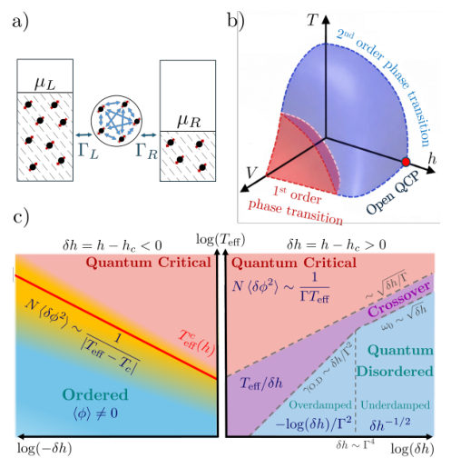
<figcaption class="paper-figure-caption"><b>Fig 1.</b> Figure 1. Model and nonequilibrium phase diagram. (a) Schematic of the electronic LMG model: a magnetic quantum dot hosting a collective spin, tunnel-coupled to two metallic leads held at chemical potentials µL = −µR = V /2 with tunnelling rates ΓL = ΓR = Γ/2. (b) Sketch of the phase diagram for ϕ = ⟨ˆSx⟩/N in (h, T, V ) space at small Γ: the blue region is ordered (ϕ = 0 unstable), the red region bistable (ϕ = 0 and ϕ ≠0 both stable or metastable), and the red dot at V = T = 0 marks the open QCP, with distinct scaling laws from the closed LMG. (c) Sketch of the quantum-critical fan in the (δh, Teff) plane [See Eq. (8)], covering both the ordered (δh &lt; 0) and disordered (δh &gt; 0) sides, with...</figcaption>
</figure>
<figure class="paper-figure-card">
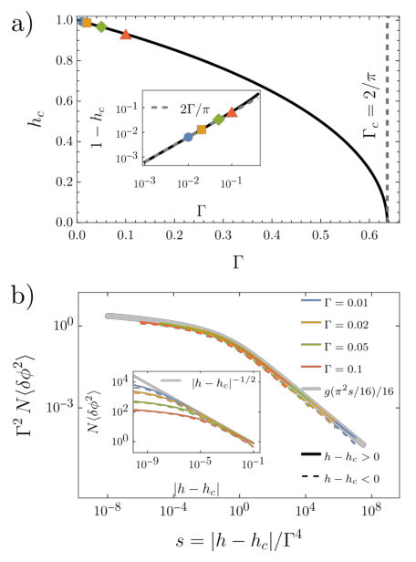
<figcaption class="paper-figure-caption"><b>Fig 2.</b> Figure 2. Open QCP. (a) Critical field hc(Γ) separat- ing the ordered (ϕ ≠0, below) and paramagnetic (ϕ = 0, above) phases at T = V = 0. Colored markers at Γ = {0.01, 0.02, 0.05, 0.1} label the curves used in (b). (b) Scal- ing collapse of the steady-state order-parameter fluctuations: rescaled Γ2N⟨δϕ2⟩versus s = ∣h−hc∣/Γ4 for the marked values of Γ, on both the ordered (h −hc &lt; 0, solid) and disordered (h−hc &gt; 0, dashed) sides. Curves collapse onto the closed-form scaling function g of Eq. (16), with prefactors derived from the values of a, λ and c in Eq. (6). Inset: raw fluctuations N⟨δϕ2⟩versus ∣h −hc∣before rescaling, showing the logarith- mic divergence of the open QCP; the...</figcaption>
</figure>
<figure class="paper-figure-card">
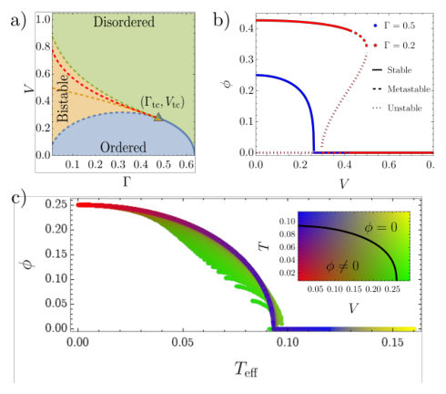
<figcaption class="paper-figure-caption"><b>Fig 3.</b> Figure 3. Bias-driven transitions (at T = h = 0 unless noted otherwise). (a) Steady-state phase diagram in the (Γ, V ) plane: an ordered region (ϕ ≠0 only), a disordered re- gion (ϕ = 0 only), and a bistable region where ϕ = 0 and ϕ ≠0 are simultaneously stable. In the bistable regime, the orange dashed line separates the region where the global minimum of F is disordered (above it) from that where it is ordered (be- low it). In red, we mark the equal-depth curve of W instead. Regions meet at the tricritical point (Γtc, Vtc) = (3, √</figcaption>
</figure>
<figure class="paper-figure-card">
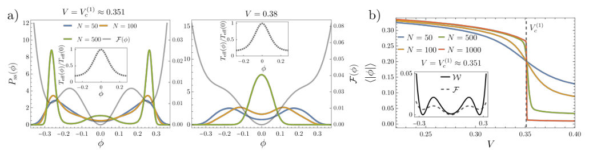
<figcaption class="paper-figure-caption"><b>Fig 4.</b> Figure 4. Non-Boltzmann state selection (T = h = 0, Γ = 0.35). (a) Stationary distributions contrasted with F[ϕ] for different N across the bistable region. Teff(ϕ)/Teff(0) is plotted on the inset. (b) Expected value ⟨∣ϕ∣⟩for different N across the bistable region. The critical point converges to V (1) c ≈0.351, the equal-depth point of W. In the inset, we plot F(ϕ) and W(ϕ) at V (1) c . At V = V (1) c , γOD(ϕ∗)/Γ ≈0.05 and γOD(ϕ∗)/Teff(ϕ∗) ≈0.18, with ϕ∗the mid-point between local minima of W.</figcaption>
</figure>
<figure class="paper-figure-card">
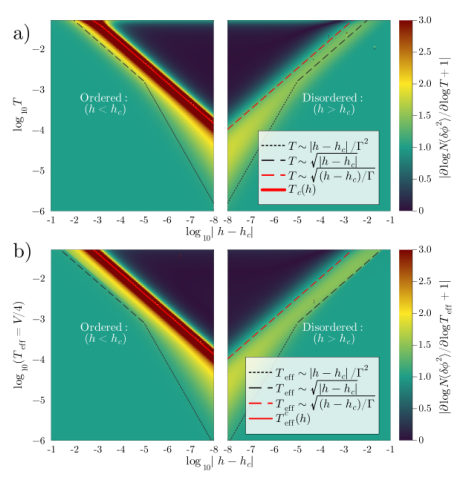
<figcaption class="paper-figure-caption"><b>Fig 5.</b> Figure 5. Fluctuation structure near the QCP from numerical integration of Eq. (5) at Γ = 0.05. (a) Thermal case (V = 0): the indicator ∣∂log N⟨δϕ2⟩/∂log T +1∣in the ( ∣h−hc∣, T ) plane (log–log), for both h −hc &gt; 0 (right) and h −hc &lt; 0 (left). The indicator is 0 in the quantum-critical region [N⟨δϕ2⟩∼ 1/(ΓT)], 1 where N⟨δϕ2⟩is T-independent, 2 in the crossover region (∼T), and diverges on the critical line Tc(h) (red); the color scale is capped at 3. Overlaid are the crossover curves T ∼∣h −hc∣/Γ2, T ∼ √</figcaption>
</figure>
</div>

<p><strong>Summary.</strong> This work analyzes quantum criticality in driven-dissipative systems using the eLMG model. It shows that while an effective temperature governs critical fluctuations, the system's steady state selection near first-order transitions is governed by a non-Boltzmann rule. This highlights a crucial distinction between thermal and non-equilibrium state selection in driven quantum matter.</p>
<p><strong>Why it may be interesting.</strong> It provides a detailed theoretical framework for understanding how non-equilibrium driving fundamentally alters the statistical description of quantum phase transitions, moving beyond simple thermal equilibrium assumptions.</p>
<details>
<summary>Detailed structure</summary>
<p><strong>Main problem.</strong> The paper investigates whether non-equilibrium quantum-critical steady states in driven-dissipative systems can be described by a simple effective temperature.</p>
<p><strong>Main result.</strong> While the critical fluctuations are governed by an effective temperature, the steady state selection near first-order transitions follows a non-Boltzmann rule, decoupling it from the deterministic potential.</p>
<p><strong>Method.</strong> The authors employ the Keldysh path-integral formalism, large-N limit treatments, and renormalization-group scaling analysis to study the steady-state probability distribution.</p>
<p><strong>Model / system.</strong> The model is an electronic Lipkin--Meshkov--Glick (eLMG) model, representing a quantum dot with a collective spin coupled to voltage-biased metallic leads, making it a minimal driven-dissipative system.</p>
<p><strong>Key observables.</strong> Order parameter ($\phi$), critical fluctuations ($\langle\delta\phi^2
angle$), and the stationary probability distribution $P_{ss}(\phi)$.</p>
<p><strong>Important parameters / regimes.</strong> Magnetic field ($h$), coupling strength ($J$), temperature ($T$), bias voltage ($V$), and hybridization strength ($\Gamma$).</p>
<p><strong>Assumptions / limitations.</strong> The analysis relies on the large-N limit, Keldysh formalism, and approximations like the Gaussian kernel expansion for fluctuations.</p>
<p><strong>Figures summary.</strong> Figures illustrate the phase diagram showing the open QCP, the suppression of the critical field by dissipation, and the stationary probability distributions in the bistable regime.</p>
<p><strong>Paper structure.</strong> The paper progresses by first establishing the model and the role of $T_{	ext{eff}}$ in the open QCP, then analyzing the scaling of fluctuations, and finally contrasting the thermal (second-order) vs. non-thermal (first-order) state selection mechanisms.</p>
</details>
<details>
<summary>Abstract</summary>
<p>Whether a nonequilibrium quantum-critical steady state can be described by an effective temperature remains an open question. We address it in a voltage-biased electronic Lipkin--Meshkov--Glick model, a minimal driven-dissipative model of a collective spin coupled to metallic leads. A controlled large-$N$ treatment reveals an overdamped open quantum-critical regime distinct from the closed model. The surrounding quantum critical fan, organized by temperature and voltage, is explored and fluctuations are found to be governed by an effective temperature $T_{\rm eff}$. At strong bias, the transition becomes first-order through a tricritical point. Remarkably, the same $T_{\rm eff}$ governs the strongly driven regime, but now varies across the entire order-parameter landscape. The steady state is therefore selected by a non-Boltzmann rule, shifting the first-order transition away from the equal-depth point of a deterministic potential. Driven criticality thus remains organized by an effective temperature while revealing non-thermal state selection.</p>
</details>
<p><sub><a href="#top">↑ back to top</a></sub></p>

<p><a id="paper-2609.25232"></a></p>
<h3 id="strong-coupling-of-a-reconfigurable-math122mathyb-atom-array-to-a-tunable-telecom-band-nanofiber-cavity"><a href="http://arxiv.org/abs/2609.25232v1">Strong coupling of a reconfigurable ${}^{171}$Yb atom array to a tunable telecom-band nanofiber cavity</a></h3>
<p><strong>Authors:</strong> Hideki Ozawa, Neville Chen, Yusuke Hisai, Shunichiro Hashimoto, Kenichi N. Komagata, Remi T. Oddon, Shanjou Yang, Seitaro Horikawa, Seigo Kikura, Shigehito Miki, Takao Aoki, Tadayuki Yoshitake, Hideki Konishi, Shinichi Sunami, Akihisa Goban, Ryotaro Inoue<br>
<strong>Type:</strong> experiment · <strong>Category:</strong> other · <strong>PDF:</strong> <a href="https://arxiv.org/pdf/2609.25232v1">https://arxiv.org/pdf/2609.25232v1</a><br>
<strong>Analysis basis:</strong> full PDF text, analyzed in chunks
<strong>Topic relevance:</strong> 🔥 <code>QC/QI experiment</code> <strong>4/5</strong> · 🔥 <code>quantum optics experiment</code> <strong>4/5</strong> · <code>Tavis-Cummings &amp; cavity-many-emitter</code> <strong>3/5</strong> · <code>analog quantum simulation</code> <strong>3/5</strong> · <code>quantum measurements</code> <strong>1/5</strong></p>
<div class="figure-strip-hint">↔ Scroll figures horizontally</div>
<div class="paper-figures-scroll">
<figure class="paper-figure-card">
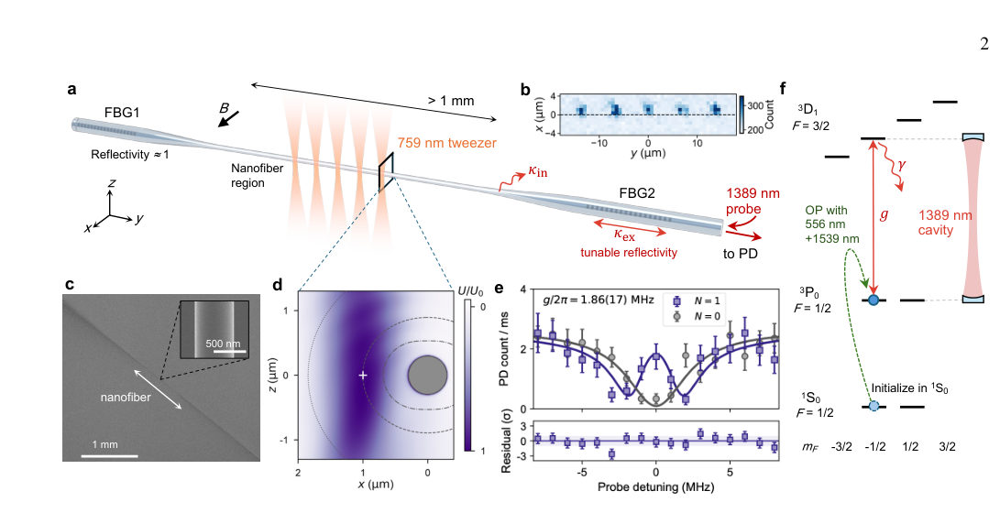
<figcaption class="paper-figure-caption"><b>Fig 1.</b> FIG. 1. Telecom-band nanofiber cavity with an array of 171Yb atoms in optical tweezers. a, Overview of the platform. The nanofiber cavity is formed by a pair of fiber Bragg gratings (FBG1, FBG2) inscribed in the standard-fiber sections on either side of the nanofiber region, directly connected to the detection system. 171Yb atoms are loaded into a 759-nm optical tweezer array and transported to 1 μm from nanofiber axis, where the atoms are strongly coupled to the evanescent cavity mode. b, Single-shot raw image of a five-site tweezer array, measured with standard 556-nm fluorescence imaging for ground-state atoms. Individual sites remain clearly resolved under illumination by two...</figcaption>
</figure>
<figure class="paper-figure-card">
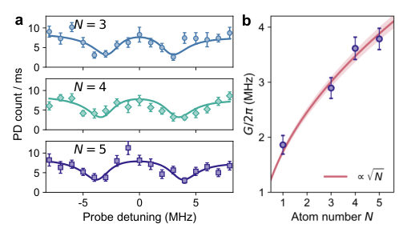
<figcaption class="paper-figure-caption"><b>Fig 2.</b> FIG. 2. Collective atom-cavity coupling with an array of single atoms. a, Cavity-reflection spectra for 𝑁= 3, 4 and 5 atoms, fitted with the input-output model, yielding collective coupling of 𝐺/2𝜋= 2.89(19), 3.61(20), and 3.78(19) MHz, respectively. We used higher probe power than the data shown in Fig. 1e. b, The fitted values of 𝐺/2𝜋as a function of atom number 𝑁, together with the measured single-atom value from Fig. 1e, as well as a fitted scaling 𝐺/2𝜋= 𝐺1 √</figcaption>
</figure>
<figure class="paper-figure-card">
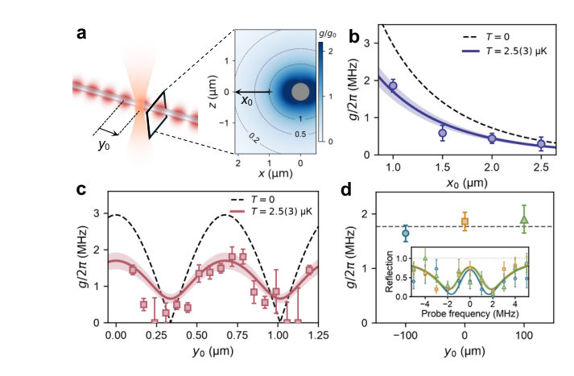
<figcaption class="paper-figure-caption"><b>Fig 3.</b> FIG. 3. Spatially resolved atom-cavity coupling. a, Geometry of the position scans relative to the nanofiber cavity mode. The coordinates 𝑥0 and 𝑦0 denote radial displacement and translation along the nanofiber axis, respectively. The inset shows the calculated atom-cavity coupling strength normalized to its value at the operating position (𝑥, 𝑧) = (1, 0) μm at the antinode of the standing-wave pattern along 𝑦. b, The atom-cavity coupling rate obtained from the cavity reflection spectra measured at varying 𝑥0, resolving the exponential decay of the evanescent cavity field. The dashed line is the ideal model calculated from the HE11 mode profiles at zero temperature and with perfect state...</figcaption>
</figure>
<figure class="paper-figure-card">
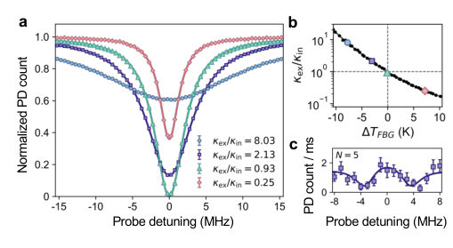
<figcaption class="paper-figure-caption"><b>Fig 4.</b> FIG. 4. In situ tuning of the external coupling rate. a, Mea- sured empty cavity reflection spectra at 𝜅ex/𝜅in = 8.03(42), 2.13(15), 0.93(9), and 0.25(6), covering the overcoupled, near-critically cou- pled, and undercoupled regimes. b, Control of the external coupling rate 𝜅ex/𝜅in by tuning the FBG2 temperature offset Δ𝑇FBG. The colored markers indicate the operating points corresponding to the spectra in a; the dashed lines mark critical coupling. c, Representa- tive cavity-reflection spectrum with 𝑁= 5 atoms at 𝜅ex/𝜅in = 1.82(9) with fitted collective atom-cavity coupling of 𝐺/2𝜋= 3.9(1.2) MHz, demonstrating that atom-cavity coupling is maintained in the over- coupling regime.</figcaption>
</figure>
<figure class="paper-figure-card">
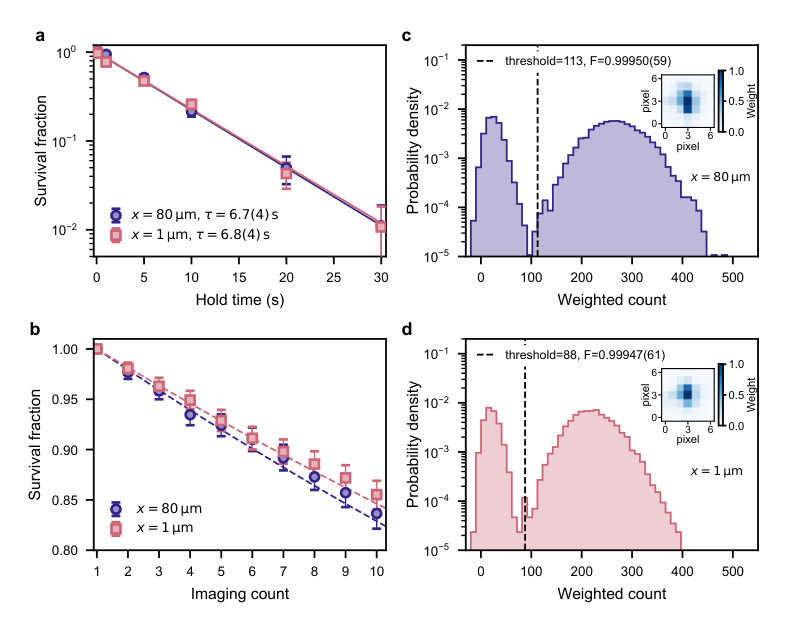
<figcaption class="paper-figure-caption"><b>Fig 5.</b> FIG. 5. Operating tweezer-trapped atom array next to a nanophotonic device. a, Lifetime of the trapped atoms. Survival fraction of tweezer-trapped atoms as a function of hold time in free space (𝑥= 80 μm) and at the side-trap configuration (𝑥= 1 μm). Exponential fits yield the lifetimes of 𝜏= 6.7(4) s and 6.8(4) s, respectively. b, Fraction of sites bright in the first image that remain bright in imaging count 𝑗, with error bars denoting bootstrap 95% intervals. Dashed lines show 𝑝𝑗−1 s with the per-image survival probability 𝑝s = 97.9(4)% (𝑥= 80 μm) and 98.2(4)% (𝑥= 1 μm) obtained from the three-image analysis (see Methods). c,d, Histograms of the weighted counts of the three-image...</figcaption>
</figure>
</div>

<p><strong>Summary.</strong> The research demonstrates strong coupling between a reconfigurable array of ${}^{171}	ext{Yb}$ atoms and a tunable nanofiber cavity operating at telecom wavelengths. By characterizing the coupling strength and the tunability of the cavity, the authors establish a robust interface for quantum networking. This paves the way for high-rate, multiplexed entanglement generation necessary for distributed quantum computing.</p>
<p><strong>Why it may be interesting.</strong> This work is highly relevant as it pushes cavity QED into the telecom regime using neutral atoms, which is a critical step for building scalable quantum networks and quantum repeaters.</p>
<details>
<summary>Detailed structure</summary>
<p><strong>Main problem.</strong> The goal is to create a high-rate, high-fidelity quantum interconnect by coupling a reconfigurable array of ${}^{171}	ext{Yb}$ atoms to a tunable telecom-band nanofiber cavity.</p>
<p><strong>Main result.</strong> The authors successfully demonstrated strong atom-photon coupling on the telecom-band transition, achieving single-atom cooperativity of $C_{	ext{in}}=5.6$ and projecting a time-multiplexed entanglement generation rate of $40 	ext{ kHz}$.</p>
<p><strong>Method.</strong> The study uses reflection spectroscopy on a single-sided cavity, combined with optical tweezer trapping and transport, to characterize the atom-cavity interaction.</p>
<p><strong>Model / system.</strong> The platform combines a nanofiber cavity (formed by two FBGs) operating at $1389 	ext{ nm}$ with an array of ${}^{171}	ext{Yb}$ atoms trapped in optical tweezers. The system is designed to interface neutral-atom quantum processors with telecom quantum networks.</p>
<p><strong>Key observables.</strong> Single-atom internal cooperativity ($C_{	ext{in}}$), collective coupling scaling ($\sqrt{N}$), and the cavity outcoupling rate ($\kappa_{	ext{ex}}$).</p>
<p><strong>Important parameters / regimes.</strong> Telecom wavelength ($1389 	ext{ nm}$), single-atom coupling ($g/2\pi \approx 1.86 	ext{ MHz}$), and the ability to tune $\kappa_{	ext{ex}}$ over two orders of magnitude.</p>
<p><strong>Assumptions / limitations.</strong> The analysis relies on single-sided cavity input-output models and assumes compatibility between the tweezer trapping light and the cavity coupling mechanism.</p>
<p><strong>Figures summary.</strong> Figures illustrate the platform overview, the tweezer array setup, and SEM images of the fabricated nanofiber, supporting the characterization of coupling strength and transport feasibility.</p>
<p><strong>Paper structure.</strong> The paper progresses from establishing the physical platform and coupling strength via spectroscopy, to demonstrating tunability of the cavity coupling rate, and finally to analyzing the compatibility for high-rate, multiplexed quantum networking protocols.</p>
</details>
<details>
<summary>Abstract</summary>
<p>Nanophotonic cavities provide strong atom-photon coupling in a compact, directly fiber-coupled geometry, while a reconfigurable array of $^{171}$Yb atoms combines high-fidelity gates with a metastable qubit state coupled directly to a telecom-band transition, making the two a natural interface between neutral-atom quantum processors and telecom quantum networks. Here, we realize strong atom-cavity coupling on the ${}^{3}\mathrm{P}_0 \leftrightarrow {}^{3}\mathrm{D}_1$ transition of ${}^{171}\mathrm{Yb}$, establishing, to our knowledge, the first neutral-atom cavity-QED system to reach the single-atom strong-coupling regime on a telecom-band atomic transition. Reflection spectroscopy of a single-sided cavity yields a single-atom internal cooperativity of $C_{\mathrm{in}}=5.6(1.0)$ and collective coupling following $\sqrt{N}$ scaling up to $N=5$ atoms, with homogeneous coupling at antinodes over $\sim$200 $\mathrmμ$m along the nanofiber. Thermal tuning of a fiber Bragg grating provides in situ control of the cavity outcoupling rate over two orders of magnitude from the undercoupled to the overcoupled regime, relevant for various atom-cavity protocols. We confirm compatibility with reconfigurable atom arrays by demonstrating 99.95(6)\% imaging fidelity and trap lifetimes comparable to free-space array, at 1 $\mathrmμ$m from the nanofiber axis. Moreover, the diameter-engineered antireflection design of the nanofiber enables tweezer-based atom transport across the nanofiber with no measurable loss or heating at 4.5 $\mathrmμ$m above the nanofiber, supporting a two-layer architecture for the nanofiber-integrated atom array. From the demonstrated atom-cavity coupling, atom capacity, and cavity mode profile, we project time-multiplexed remote atom-atom entanglement generation at 40 kHz, with prospects for further scaling through technical enhancements and channel multiplexing.</p>
</details>
<p><sub><a href="#top">↑ back to top</a></sub></p>

<p><a id="paper-2609.25201"></a></p>
<h3 id="measurement-induced-phase-transitions-and-logical-space-localization-in-floquet-monitored-clifford-circuits"><a href="http://arxiv.org/abs/2609.25201v1">Measurement-Induced Phase Transitions and Logical-Space Localization in Floquet Monitored Clifford Circuits</a></h3>
<p><strong>Authors:</strong> Hyunsoo Ha, David A. Huse<br>
<strong>Type:</strong> theory · <strong>Category:</strong> statistical mechanics · <strong>PDF:</strong> <a href="https://arxiv.org/pdf/2609.25201v1">https://arxiv.org/pdf/2609.25201v1</a><br>
<strong>Analysis basis:</strong> full PDF text, analyzed in chunks
<strong>Topic relevance:</strong> 🔥 <code>driven-dissipative phase transition</code> <strong>4/5</strong> · 🔥 <code>quantum measurements</code> <strong>4/5</strong> · <code>non-equilibrium universality</code> <strong>3/5</strong> · <code>methods for driven-dissipative</code> <strong>2/5</strong> · <code>correlated / nonlocal dissipation</code> <strong>1/5</strong></p>
<div class="figure-strip-hint">↔ Scroll figures horizontally</div>
<div class="paper-figures-scroll">
<figure class="paper-figure-card">
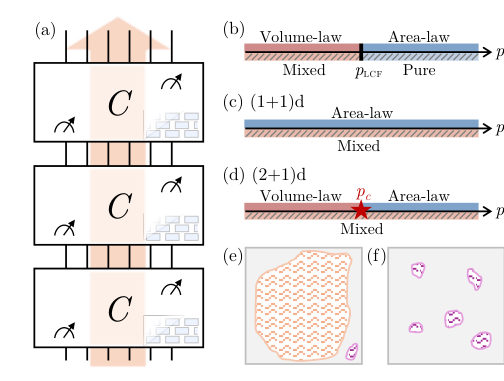
<figcaption class="paper-figure-caption"><b>Fig 1.</b> FIG. 1. Schematic overview of the Floquet monitored circuit and its phase diagram. (a) A Floquet monitored circuit is ob- tained by repeating the same circuit in time. In this work, we consider circuits composed of local Clifford gates and local Pauli measurements in various dimensions. A logical sub- space survives the measurements indefinitely, illustrated by the orange arrow, and can be characterized from the plateau stabilizer group as described in the main text. The Floquet evolution acts effectively unitarily within this surviving logical subspace. (b) Phase diagram of a generic space-time-random monitored circuit, where the gates and measurements vary randomly in both space and time....</figcaption>
</figure>
<figure class="paper-figure-card">
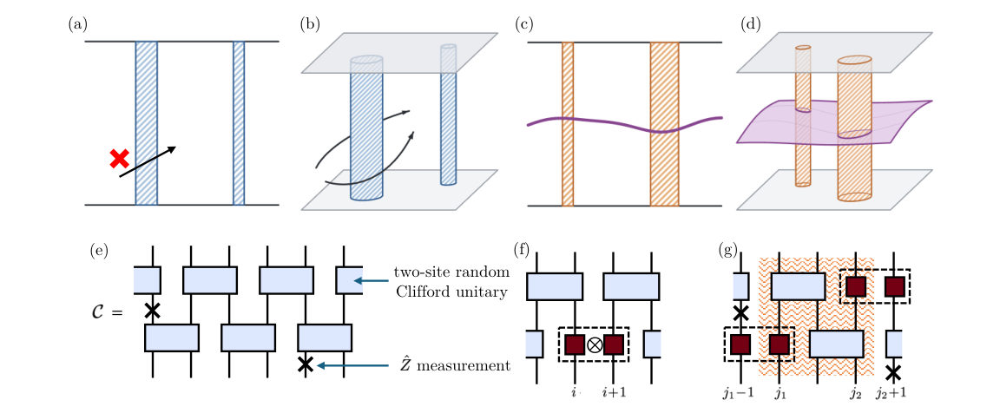
<figcaption class="paper-figure-caption"><b>Fig 2.</b> FIG. 2. Persistent blockers and storage regions. (a) In one dimension, a finite blocker (blue) persists under Floquet repetition and prevents entanglement from being produced across it. (b) In two (or more) dimensions, entanglement can be produced along paths that avoid a finite blocker. (c) In one dimension, persistent storage regions (orange) form columns extending from the initial to the final time boundary. The entanglement membrane (purple), which represents the entanglement between the final system and the initial reference, and hence the entropy remaining in the final state, must cross each column. (d) The same obstruction persists in two (or more) dimensions, where the membrane must...</figcaption>
</figure>
<figure class="paper-figure-card">

<figcaption class="paper-figure-caption"><b>Fig 3.</b> FIG. 3. Bipartite entanglement in the two-dimensional Flo- quet monitored Clifford circuit. The main panel shows log2⟨SLx/2⟩versus log2 L for square systems Lx = Ly = L at different measurement rates p, where ⟨· · · ⟩denotes an av- erage over circuit realizations. Gray dashed and dotted lines indicate L2 and L scaling, respectively. The inset shows the effective dynamical exponent zeff obtained from the median saturation time for measurement rates near the transition.</figcaption>
</figure>
<figure class="paper-figure-card">

<figcaption class="paper-figure-caption"><b>Fig 4.</b> FIG. 4. Antipodal mutual information in the two-dimensional Floquet monitored Clifford circuit. The main panel shows late-time-averaged log2⟨IAB⟩as a function of measurement rate p for different system sizes. A peak develops near the entanglement transition and grows strongly with system size, with a small finite-size drift in its position. The inset illus- trates the AMI geometry: the regions A and B are 2L × 2L squares separated by a distance L on all sides, and the dashed 3L × 6L rectangle defines the torus and the shifted periodic boundary conditions used.</figcaption>
</figure>
<figure class="paper-figure-card">

<figcaption class="paper-figure-caption"><b>Fig 5.</b> FIG. 5. Logical-support radius in the localized and delocal- ized regimes. (a) Schematic of the definition. The ball BR(r) is centered at the initial site r of the SSLO. The logical- support radius is the smallest R for which the evolved log- ical operator has a physical representative supported within BR(r), allowing multiplication by plateau stabilizers. The lighter diamond illustrates a ball with radius comparable to the system size. (b) Evolution of the logical-support radius for selected SSLOs in two L = 160 circuit realizations, one at each measurement rate. At p = 0.15, the three red curves show delocalized SSLOs that reach system-scale radii. Their growth occurs through abrupt jumps...</figcaption>
</figure>
</div>

<p><strong>Summary.</strong> This work analyzes measurement-induced phase transitions in periodically monitored quantum circuits, showing that entanglement and purification can evolve independently. By introducing the logical-support radius and Krylov dimension, the authors characterize the transition between delocalized (volume-law) and localized (area-law) information storage. This establishes a new universality class for MIPTs distinct from standard random circuit models.</p>
<p><strong>Why it may be interesting.</strong> The study of MIPTs provides a powerful, non-equilibrium tool to probe quantum criticality, offering insights into how structured dissipation can drive phase transitions distinct from thermal or Hamiltonian-driven ones.</p>
<details>
<summary>Detailed structure</summary>
<p><strong>Main problem.</strong> The paper investigates Measurement-Induced Phase Transitions (MIPTs) and the fundamental separation between entanglement dynamics and purification dynamics in quantum systems subjected to structured, repeated measurements.</p>
<p><strong>Main result.</strong> It demonstrates that entanglement and purification can transition independently, identifying distinct universality classes for these transitions based on the spatial structure of the monitoring process.</p>
<p><strong>Method.</strong> The analysis uses the plateau stabilizer group to characterize the surviving logical subspace and introduces the logical Krylov dimension to quantify the spatial spreading and localization of quantum information.</p>
<p><strong>Model / system.</strong> The model consists of spatially local monitored Clifford circuits where a fixed, random pattern of gates and Pauli measurements is repeated periodically (Floquet monitoring).</p>
<p><strong>Key observables.</strong> Entanglement (Volume-law vs. Area-law), logical-support radius, and the logical Krylov dimension.</p>
<p><strong>Important parameters / regimes.</strong> The dimensionality of the system (1D vs. 2D+), the measurement probability ($p$), and the time scale (late-time/thermodynamic limit).</p>
<p><strong>Assumptions / limitations.</strong> The analysis relies on deriving an effective Floquet unitary acting on the surviving logical degrees of freedom, assuming the dynamics are governed by the plateau stabilizer group.</p>
<p><strong>Figures summary.</strong> Figures illustrate the phase diagram, showing the separation of dynamics in 1D and the volume-law to area-law transition in 2D+. Schematics detail the localized vs. delocalized logical subspaces.</p>
<p><strong>Paper structure.</strong> The paper proceeds by first establishing the effective Floquet dynamics via the plateau stabilizer group, then analyzing the separation of entanglement/purification in 1D, followed by characterizing the volume-law to area-law transition in 2D+ using entanglement measures, and finally resolving the transition using the logical support radius and Krylov dimension.</p>
</details>
<details>
<summary>Abstract</summary>
<p>An entanglement transition can occur without a corresponding transition in purification. We demonstrate this separation in spatially local monitored Clifford circuits with a fixed number of layers per Floquet period, where a spatially random pattern of Clifford gates and Pauli measurements is repeated exactly in time. Rare spatial structures persist under this repetition and break the correspondence between entanglement and purification found in conventional spacetime-random circuits. In one spatial dimension, the late-time entanglement produced with an initial product state remains area-law, while the system remains extensively mixed in the thermodynamic and long-time limits if the initial state is maximally mixed. In two or more dimensions, we find a transition between volume-law and area-law entanglement while the system remains mixed on both sides of this transition. An extensive amount of quantum information survives indefinitely in both phases and evolves unitarily despite the repeated measurements. We introduce the logical-support radius to characterize its spatial spreading and identify the volume-law and area-law phases with delocalized and localized logical dynamics, respectively. We further introduce the logical Krylov dimension, which counts the independent logical operators dynamically generated from an initially local operator. Its scaling resolves the transition and provides evidence for a new universality class of measurement-induced phase transitions.</p>
</details>
<p><sub><a href="#top">↑ back to top</a></sub></p>

<p><a id="paper-2609.25844"></a></p>
<h3 id="quantum-survival-in-hybrid-pursuit-dynamics-a-lion-chasing-a-lamb-problem"><a href="http://arxiv.org/abs/2609.25844v1">Quantum survival in hybrid pursuit dynamics - a lion chasing a lamb problem</a></h3>
<p><strong>Authors:</strong> P. Held, İ. Yalçınkaya, F. Pegoraro, J. Lammers, F. Schlue, K. Jiráková, S. Barkhofen, B. Brecht, M. Štefaňák, V. Potoček, A. Gábris, I. Jex, C. Silberhorn<br>
<strong>Type:</strong> experiment · <strong>Category:</strong> quantum information and computing · <strong>PDF:</strong> <a href="https://arxiv.org/pdf/2609.25844v1">https://arxiv.org/pdf/2609.25844v1</a><br>
<strong>Analysis basis:</strong> full PDF text, analyzed in chunks
<strong>Topic relevance:</strong> 🔥 <code>quantum measurements</code> <strong>4/5</strong> · <code>QC/QI experiment</code> <strong>2/5</strong> · <code>analog quantum simulation</code> <strong>2/5</strong> · <code>methods for driven-dissipative</code> <strong>2/5</strong> · <code>correlated / nonlocal dissipation</code> <strong>1/5</strong> · <code>driven-dissipative phase transition</code> <strong>1/5</strong> · <code>non-equilibrium universality</code> <strong>1/5</strong> · <code>quantum optics experiment</code> <strong>1/5</strong></p>
<div class="figure-strip-hint">↔ Scroll figures horizontally</div>
<div class="paper-figures-scroll">
<figure class="paper-figure-card">

<figcaption class="paper-figure-caption"><b>Fig 1.</b> FIG. 1. Pictorial illustration of the hybrid quantum-classical pur- suit problem over six steps using a quantum analogue of a Galton board. The lamb (a photon), initialized in the state |−1, 0⟩, prop- agates through an array of 50/50 beam splitters. The light-brown track indicates one possible trajectory of the lion, whose successive projections of the lamb’s wavefunction give rise to the probability distribution reconstructed from many repetitions.</figcaption>
</figure>
<figure class="paper-figure-card">

<figcaption class="paper-figure-caption"><b>Fig 2.</b> FIG. 3. (a) Network for implementing the lion’s action by cou- pling each QW mode in each step to an auxiliary mode (AM). With increasing step number, the number of QW modes grows linearly whereas the number of AMs grows quadratically. (b) Schematics of the time-multiplexed QW setup. Via two fiber loops (yellow) and a feedback path (black) the lamb’s evolution is implemented, while the EOMs are used to implement the lion’s action. By separating QW modes and AMs, an excellent scaling behavior is achieved.</figcaption>
</figure>
<figure class="paper-figure-card">

<figcaption class="paper-figure-caption"><b>Fig 3.</b> FIG. 4. Measured survival probability at step 20 compared to the- ory for varying p. Counterintuitively, the survival probability of lamb initially increases despite the increasing randomness of the lion’s movement, demonstrating that mixing classical stochasticity and quantum evolution can enhance survival through modified in- terference, resembling the non-monotonic recurrence behavior of stochastic walks [10]. The blue area indicates one sigma uncertainty due to finite sampling of trajectories.</figcaption>
</figure>
</div>

<p><strong>Summary.</strong> This work explores quantum survival in a hybrid quantum-classical pursuit game using a photonic quantum walk setup. By simulating a quantum walker chased by a classical random walker, the authors demonstrate that increasing the predator's mobility can paradoxically enhance the prey's survival. This highlights a novel mechanism where classical stochastic control aids quantum coherence.</p>
<p><strong>Why it may be interesting.</strong> It provides a concrete, experimentally realized platform for studying how controlled measurement back-action and classical stochasticity can actively enhance quantum coherence and survival, which is a key topic in open quantum systems.</p>
<details>
<summary>Detailed structure</summary>
<p><strong>Main problem.</strong> The paper investigates the interplay between quantum coherence and classical randomness by modeling a quantum walker (lamb) being pursued by a classical random walker (lion).</p>
<p><strong>Main result.</strong> Counterintuitively, increasing the lion's mobility does not monotonically suppress the lamb's survival probability; for a broad range of hopping probabilities, the lamb survives better than against an immobile predator.</p>
<p><strong>Method.</strong> The dynamics are studied by implementing a photonic time-multiplexed quantum walk, where the lion's action is simulated via measurements (projections) onto auxiliary modes.</p>
<p><strong>Model / system.</strong> The system involves a quantum walker (lamb) evolving unitarily on a line, coupled to a classical lazy random walk (lion). The interaction is non-unitary due to measurement-induced projection at the lion's position.</p>
<p><strong>Key observables.</strong> Survival probability, $S_t(p)$, which is the average of the instantaneous survival probability over all possible lion trajectories.</p>
<p><strong>Important parameters / regimes.</strong> Lion's hopping probability ($p$), time steps ($t=20$), and the scaling of auxiliary modes ($t^2$).</p>
<p><strong>Assumptions / limitations.</strong> The analysis relies on averaging over all possible lion trajectories, and experimental measurements account for detector saturation and polarization imbalance.</p>
<p><strong>Figures summary.</strong> Figure 4 compares the measured and theoretical quantum survival probability versus the lion's hopping probability ($p$), showing the non-monotonic enhancement.</p>
<p><strong>Paper structure.</strong> The paper introduces the hybrid quantum-classical pursuit problem, details the photonic time-multiplexed experimental setup, presents the theoretical framework for averaging over classical paths, and finally reports the measured survival probability results.</p>
</details>
<details>
<summary>Abstract</summary>
<p>Measurement and classical randomness usually degrade coherence; controlling where and when a subsystem is monitored can instead make them a tunable resource. We introduce a photonic time-multiplexed quantum walk whose fast reconfigurability enables precise position measurements, allowing us to study this interplay in a hybrid quantum-classical pursuit problem: A quantum walker (lamb) evolves on a line while a classical pursuer (lion) performs a lazy random walk. Each lion trajectory drives a distinct coherent, norm-reducing evolution of the lamb, with capture implemented by measurements at the lion's positions; averaging over the recorded trajectories then synthesizes a decoherent process. Counterintuitively, increasing the lion's mobility does not monotonically suppress survival: over a broad range of hopping probabilities, the lamb survives better than against an immobile predator. Directly observing this local enhancement, we demonstrate a manifestly quantum feature aided rather than hindered by classical stochastic control.</p>
</details>
<p><sub><a href="#top">↑ back to top</a></sub></p>

<p><a id="paper-2609.25598"></a></p>
<h3 id="efficient-ion-photon-quantum-interface-with-long-working-distance-exceeding-26-mm"><a href="http://arxiv.org/abs/2609.25598v1">Efficient Ion-Photon Quantum Interface with Long-Working-Distance Exceeding 26 mm</a></h3>
<p><strong>Authors:</strong> Jungwoo Choi, Inhyuk Oh, Chanyang Im, Gibeom Son, Junki Kim<br>
<strong>Type:</strong> experiment · <strong>Category:</strong> other · <strong>PDF:</strong> <a href="https://arxiv.org/pdf/2609.25598v1">https://arxiv.org/pdf/2609.25598v1</a><br>
<strong>Analysis basis:</strong> full PDF text, analyzed in chunks
<strong>Topic relevance:</strong> 🔥 <code>quantum optics experiment</code> <strong>4/5</strong> · <code>QC/QI experiment</code> <strong>3/5</strong> · <code>analog quantum simulation</code> <strong>2/5</strong> · <code>quantum measurements</code> <strong>2/5</strong> · <code>Full counting statistics</code> <strong>1/5</strong> · <code>interference shaping light</code> <strong>1/5</strong></p>
<div class="figure-strip-hint">↔ Scroll figures horizontally</div>
<div class="paper-figures-scroll">
<figure class="paper-figure-card">

<figcaption class="paper-figure-caption"><b>Fig 1.</b> Fig. 1 Schematic cross-section of the long-WD objective lens system. The working distance of the custom objective is 26.15 mm, defined as the mechanical clearance from the ion position to the assembled objective housing. The gray region marks the vacuum-chamber interior, which houses a four-rod Paul trap that confines the ions (camera image: 17 138Ba+ ions). Black solid lines indicate the marginal rays that define the object-space NA of 0.5. At the focal plane, the full marginal-ray bundle falls within the Airy disk (right inset), as required for the diffraction-limited design. The final cylindrical lens (Thorlabs LJ1516RM-A) is used in the experiment to correct residual astigmatism.</figcaption>
</figure>
<figure class="paper-figure-card">

<figcaption class="paper-figure-caption"><b>Fig 2.</b> Fig. 2 Through-focus fluorescence imaging and ray-tracing simulations of a single 138Ba+ ion. Experimental images after alignment optimization are shown in the top row, and corresponding ray- tracing simulations are shown in the bottom row. Images were acquired at 100 µm axial steps from −300 µm to +300 µm relative to the focal plane. Scale bar: 10 µm.</figcaption>
</figure>
<figure class="paper-figure-card">

<figcaption class="paper-figure-caption"><b>Fig 3.</b> Fig. 3 Intensity profile characterization by scanning the single-mode fiber tip. (a) Normalized pho- ton count rate over a 20 µm × 20 µm area (1 µm steps). (b) Cross-sections along X and Z axes. Experimental data and Gaussian fits (blue markers and blue dashed curves) are compared with the convolution of the simulated PSF and the fiber mode profile (black solid curves).</figcaption>
</figure>
<figure class="paper-figure-card">

<figcaption class="paper-figure-caption"><b>Fig 4.</b> Fig. 4 Mechanical integration and passive mechanical stability. (a) Computer-aided design (CAD) model of the custom chamber base and objective mount. (b) Photograph of the experimental appa- ratus. (c) Normalized fiber-coupled fluorescence monitored for 4 h without realignment, showing the signal remains above 80% of its initial value for 58 min and reaches 60% at 231 min.</figcaption>
</figure>
<figure class="paper-figure-card">

<figcaption class="paper-figure-caption"><b>Fig 5.</b> Fig. 5 Second-order correlation function g(2)(τ) of single-ion fluorescence coupled to a SMF. Gray dots represent the experimental data, and the black solid line indicates the theoretical fit based on the 3-level optical Bloch equations.</figcaption>
</figure>
</div>

<p><strong>Summary.</strong> This paper presents the design and characterization of a novel, high-performance ion-photon interface capable of operating over a long working distance (26.15 mm). By optimizing a custom objective lens system, the authors achieved a stable, fiber-coupled detection efficiency of $\approx 1.3\%$ for trapped-ion fluorescence. This practical implementation is crucial for scaling up trapped-ion quantum network experiments.</p>
<p><strong>Why it may be interesting.</strong> This work directly addresses a major engineering bottleneck in trapped-ion quantum networking: coupling high-quality quantum light sources to external fiber infrastructure while maintaining operational stability and spatial constraints.</p>
<details>
<summary>Detailed structure</summary>
<p><strong>Main problem.</strong> The primary challenge was designing an efficient ion-photon quantum interface that could maintain high photon collection efficiency while providing a long working distance for practical integration with existing ion-trap hardware.</p>
<p><strong>Main result.</strong> The authors successfully demonstrated an interface with a working distance of 26.15 mm and an overall fiber-coupled detection efficiency of $(1.29 \pm 0.09)\%$, while confirming non-classical photon statistics via antibunching measurements.</p>
<p><strong>Method.</strong> The interface was constructed using a custom objective lens system of six spherical lenses, which was characterized by optimizing lens spacing and performing detailed photon-correlation measurements.</p>
<p><strong>Model / system.</strong> The experiment utilizes trapped $^{138}	ext{Ba}^+$ ions in a 4-rod Paul trap. The system involves collecting fluorescence photons emitted from the ion, which are then coupled into a Single-Mode Fiber (SMF).</p>
<p><strong>Key observables.</strong> Overall fiber-coupled photon-detection efficiency ($\approx 1.3\%$), antibunching ($g^{(2)}(0) = 0.042$), and signal stability over several hours.</p>
<p><strong>Important parameters / regimes.</strong> Working Distance (WD) &gt; 26 mm, Numerical Aperture (NA) = 0.5, and the use of a six-lens objective assembly.</p>
<p><strong>Assumptions / limitations.</strong> The analysis notes that initial simulations overestimated the coupling efficiency, and the final measurements were limited by the practical assembly of the complex optical system.</p>
<p><strong>Figures summary.</strong> Figures show the schematic cross-section of the objective lens system (Fig. 1), optimized through-focus images across an axial scan (Fig. 2), and the mechanical integration setup and stability monitoring (Fig. 4).</p>
<p><strong>Paper structure.</strong> The paper details the design of the long-working-distance objective, presents the experimental setup integrated with the ion trap, characterizes the optical performance (efficiency and stability), and confirms the quantum nature of the emitted light via correlation measurements.</p>
</details>
<details>
<summary>Abstract</summary>
<p>Trapped-ion quantum networks rely on efficient ion-photon interfaces, while objective-based free-space collection systems must balance high photon collection with sufficient working distance for practical integration with ion-trap hardware. Here, we design and characterize an ion-photon interface with a long working distance of 26.15 mm and a high numerical aperture of 0.5. The core of the interface is a photon-collection objective consisting of six commercial spherical lenses with optimized spacing. The interface achieved an overall fiber-coupled photon-detection efficiency of (1.29$\pm$0.09)% from the ion to the detector and maintains fiber coupling over several hours without active realignment, supporting stable operation of the ion-to-fiber interface. Photon-correlation measurements show clear antibunching in the fiber-coupled fluorescence, confirming the preservation of non-classical photon statistics. These results demonstrate a practical implementation of a long-working-distance photon collection interface for trapped-ion quantum network experiments.</p>
</details>
<p><sub><a href="#top">↑ back to top</a></sub></p>

<p><a id="paper-2609.25673"></a></p>
<h3 id="post-selected-enhancement-of-phase-sensitivity-in-a-two-path-interferometer"><a href="http://arxiv.org/abs/2609.25673v1">Post-selected enhancement of phase sensitivity in a two-path interferometer</a></h3>
<p><strong>Authors:</strong> Ryuya Fukuda, Katsuki Tanaka, Masataka Iinuma, Holger F. Hofmann<br>
<strong>Type:</strong> experiment · <strong>Category:</strong> other · <strong>PDF:</strong> <a href="https://arxiv.org/pdf/2609.25673v1">https://arxiv.org/pdf/2609.25673v1</a><br>
<strong>Analysis basis:</strong> full PDF text, analyzed in chunks
<strong>Topic relevance:</strong> 🔥 <code>interference shaping light</code> <strong>4/5</strong> · 🔥 <code>quantum optics experiment</code> <strong>4/5</strong> · <code>quantum measurements</code> <strong>3/5</strong> · <code>QC/QI experiment</code> <strong>1/5</strong> · <code>analog quantum simulation</code> <strong>1/5</strong></p>
<div class="figure-strip-hint">↔ Scroll figures horizontally</div>
<div class="paper-figures-scroll">
<figure class="paper-figure-card">

<figcaption class="paper-figure-caption"><b>Fig 1.</b> FIG. 1. Schematic representation of the experimental setup for post-selection enhancement of single photon phase sensi- tivity in a conventional two-path interferometer. Single pho- tons are initially polarized vertically(V-polarization) and in- jected into the |+⟩superposition of the paths. The initial polarization is locally rotated in each path by two half-wave plates (HWP1 and HWP2). HWP1 slightly rotates the po- larization by +θ0, while HWP2 applies an equal rotation in the opposite direction −θ0. θ0 should be kept small to limit the associated loss of coherence. The small polarization rota- tions transfer phase sensitivity to the circular polarizations. When post-selecting the low...</figcaption>
</figure>
<figure class="paper-figure-card">

<figcaption class="paper-figure-caption"><b>Fig 2.</b> FIG. 2. Conditional probability P(R|−) of detecting the post- selected photons in the right circular polarization R as a func- tion of phase ϕ. The solid blue circles represent the experi- mental results. Enhanced phase sensitivity is observed near ϕ = 0, where the post-selection probability P(−) is mini- mal. The slope of P(R|−) at ϕ ≈0 is −2.028 ± 0.0175, which was obtained by averaging the values of three pairs, ϕ = (−π/64, π/64) and (0, ±π/32). Taking into account the slight reduction in slope as the curve bends toward its ex- trema, the slope of (0, ±π/32) was corrected by a factor of π/3. The enhancement of phase sensitivity can be visual- ized by comparison with a four-photon fringe...</figcaption>
</figure>
</div>

<p><strong>Summary.</strong> This paper demonstrates that by employing post-selection on a two-path interferometer, the phase sensitivity can be significantly enhanced beyond the standard quantum limit. This enhancement is achieved by engineering the input state to entangle path and polarization, effectively mimicking the scaling of a four-photon NOON state. This shows a powerful way to access high-precision quantum metrology using single-photon resources.</p>
<p><strong>Why it may be interesting.</strong> This work provides a concrete experimental demonstration of how measurement selection (post-selection) can effectively simulate the resource scaling of multi-photon entangled states (like NOON states) using only single photons in a standard setup.</p>
<details>
<summary>Detailed structure</summary>
<p><strong>Main problem.</strong> To enhance the phase sensitivity of a two-path interferometer beyond the standard quantum limit (SQL) using post-selection techniques.</p>
<p><strong>Main result.</strong> The achieved phase gradient approaches that of a four-photon NOON state, demonstrating that single-photon interference can reach multi-photon entanglement scaling through post-selection.</p>
<p><strong>Method.</strong> The enhancement is achieved by preparing an entangled state in the path and polarization degrees of freedom and post-selecting on a low-probability output port.</p>
<p><strong>Model / system.</strong> The system is a conventional two-path interferometer, extended to include polarization states. The phase shift is governed by a path difference operator, and the enhancement relies on transferring phase information to the circular polarization degree of freedom.</p>
<p><strong>Key observables.</strong> The conditional probability $P(R|-
angle)$ and its derivative (slope) with respect to the phase shift $\phi$.</p>
<p><strong>Important parameters / regimes.</strong> The effective photon number difference $A_{eff}$, which quantifies the enhancement; the standard quantum limit (SQL).</p>
<p><strong>Assumptions / limitations.</strong> The enhancement relies on introducing a slight entanglement between polarization and paths, and the method is limited by experimental imperfections.</p>
<p><strong>Figures summary.</strong> Figure 1 schematically shows the setup using HWP1 and HWP2 for polarization rotation. Figure 2 illustrates the measured conditional probability $P(R|-
angle)$ vs. $\phi$, showing the enhanced slope near $\phi=0$.</p>
<p><strong>Paper structure.</strong> The paper details the theoretical framework for post-selection Fisher information, applies this to the two-path interferometer by incorporating polarization, and presents experimental measurements comparing the measured slope to the theoretical NOON state prediction.</p>
</details>
<details>
<summary>Abstract</summary>
<p>Post-selected metrology can exceed the standard quantum limit of single photon interference by concentrating all of the available Fisher information in a subset of post-selected outcomes. Here we apply this principle to a standard two-path interferometer, activating the Fisher information concentrated in the low probability output port by transferring the phase sensitivity to the circular polarizations of the photon. We obtain a phase gradient of the post-selected interference fringe that corresponds to that of a four-photon NOON state, providing a direct comparison of the performance of multi-photon interference with single-photon post-selection.</p>
</details>
<p><sub><a href="#top">↑ back to top</a></sub></p>

<p><a id="paper-2609.25248"></a></p>
<h3 id="in-orbit-operation-of-a-programmable-quantum-photonic-processor"><a href="http://arxiv.org/abs/2609.25248v1">In-orbit operation of a programmable quantum photonic processor</a></h3>
<p><strong>Authors:</strong> Simon Steiner, Peter Schiansky, Antonius Scherer, Riccardo Albiero, Mathias Dragosits, Zhenghao Yin, Martin Mauser, Patrik Zahálka, Raphael Pimenta, Cristóbal Melo, Cédric Léonard, Abhiram Rajan, Niki Di Giano, Antonino Caime, Roberto Osellame, Francesco Ceccarelli, Daniel Martínez, Tobias Guggemos, Iris Agresti, Philip Walther<br>
<strong>Type:</strong> experiment · <strong>Category:</strong> quantum information and computing · <strong>PDF:</strong> <a href="https://arxiv.org/pdf/2609.25248v1">https://arxiv.org/pdf/2609.25248v1</a><br>
<strong>Analysis basis:</strong> full PDF text, analyzed in chunks
<strong>Topic relevance:</strong> 🔥 <code>QC/QI experiment</code> <strong>4/5</strong> · <code>interference shaping light</code> <strong>3/5</strong> · <code>quantum optics experiment</code> <strong>3/5</strong> · <code>analog quantum simulation</code> <strong>1/5</strong> · <code>quantum measurements</code> <strong>1/5</strong></p>
<div class="figure-strip-hint">↔ Scroll figures horizontally</div>
<div class="paper-figures-scroll">
<figure class="paper-figure-card">

<figcaption class="paper-figure-caption"><b>Fig 1.</b> FIG. 1. Photonic computing platform in space. We demonstrate a quantum computing unit operating in space, which comprises a source of indistinguishable photon pairs, a universal photonic integrated circuit (uPIC), and single-photon avalanche photodiodes (SPADs), controlled by a System on a Module (SoM). In more detail, the optical setup involves a type-II Sponta- neous Parametric Down-Conversion (SPDC) unit based on a periodically poled potassium-titanyl phosphate (ppKTP) crystal, pumped by a 405 nm continuous-wave (CW)-laser. The two orthogonally polarized photons are deterministically split in path by a fibre-based polarizing beam splitter (PBS), whose polarization-maintaining (PM) output...</figcaption>
</figure>
<figure class="paper-figure-card">

<figcaption class="paper-figure-caption"><b>Fig 2.</b> FIG. 2. Space-compatible quantum computing unit. The system fits within a 15 × 15 × 45.3 cm volume, has a total mass of 9.8 kg, and an average power consumption of 10 W. To withstand the mechanical shocks of launch, the components are mounted on purpose-built supports, while the optical fibres are secured to the frame with Kapton tape. (a) The payload is controlled by the System on a Module (SoM) containing an ARM Cortex-A9 processor and a Field-Programmable-Gate-Array (FPGA). The interplay between the electronics components and the optical payload is depicted by arrows for communication (green), power (blue, dashed) and light (purple). Power and communication with ground stations are...</figcaption>
</figure>
<figure class="paper-figure-card">

<figcaption class="paper-figure-caption"><b>Fig 3.</b> FIG. 3. In-orbit data acquisition. (a) Raw coincidence counts CCij between detectors Ci, Cj and accidental noise floor CCAcc ij for 7 V SPAD overvoltage after 23 days in orbit. The rate of coincidence counts and noise floor correlates with the payload position with respect to the sun: it is stable when the payload is shaded by the Earth (grey area) and it is strongly increased and fluctuating when facing the sun (yellow area). Given the 92 min low-Earth orbital period (red arrow), low-noise measurements are restricted to 30 min per orbit. For photons routed to detectors C0 and C5 (see Fig. 4a), the coincidence pair CC05 (solid blue) remains clearly above the noise floor CCAcc 05 (light...</figcaption>
</figure>
<figure class="paper-figure-card">

<figcaption class="paper-figure-caption"><b>Fig 4.</b> FIG. 4. On-board programmable unitary operations. (a) Scheme of the uPIC that gives an overview of the 15 MZIs and emphasizes the routing configuration for sending the two input photons to the detectors on modes C0 and C5. All MZIs have to be actively controlled to compensate for thermal crosstalk. (b) The top panels show the result of the two highlighted path configurations (solid red/ dashed green curve); U0 corresponds to the case of no interference (solid red curve), while in U3 both photons meet at the MZI6 (dashed green curve), which is set to a balanced beamsplitter. The outcome agrees well with theory (grey bars), and (c) compares the average fidelity across all measured unitaries...</figcaption>
</figure>
<figure class="paper-figure-card">

<figcaption class="paper-figure-caption"><b>Fig 5.</b> FIG. 5. Hong-Ou-Mandel interference in space. (a) Two-photon interference scan with respect to the crystal temperature, including data from three different operation days. The uPIC is set such that two input photons (corresponding to the state |010010⟩) are sent to MZI6, whose internal phase is set to φ = π/2 and whose outputs are then routed to detector pairs CC05 (green) or CC15 (light blue, violet). Individual data points of normalized coincidence counts for consecutive days in orbit (i.O.) are marked in the background while the inverse-variance weighted average of these points (dark blue) highlights the overall trend. Error bars indicate one standard deviation, obtained by Gaussian...</figcaption>
</figure>
</div>

<p><strong>Summary.</strong> This paper reports the successful operation of a programmable quantum photonic processor on a nanosatellite in orbit. By generating and manipulating indistinguishable photon pairs, the researchers demonstrated two-photon quantum interference, proving the feasibility of using quantum light for onboard computation. This advances quantum technology from secure communication to active, space-based quantum data processing.</p>
<p><strong>Why it may be interesting.</strong> This work directly addresses the engineering and physical realization challenges of quantum computation in extreme environments, providing a roadmap for space-based quantum information processing.</p>
<details>
<summary>Detailed structure</summary>
<p><strong>Main problem.</strong> The challenge is to transition quantum photonic states from mere communication resources to active computational resources onboard satellites, overcoming environmental hurdles like thermal drift and radiation.</p>
<p><strong>Main result.</strong> The authors successfully demonstrated the hardware primitive for quantum-enhanced onboard processing by observing two-photon quantum interference (HOM dip) in orbit.</p>
<p><strong>Method.</strong> The experiment involved programming a quantum photonic processor to execute distinct unitary transformations on two indistinguishable photons.</p>
<p><strong>Model / system.</strong> The platform is a programmable quantum photonic processor housed on a nanosatellite, featuring a source of indistinguishable photon pairs, a six-mode universal photonic integrated circuit (uPIC), and single-photon detectors.</p>
<p><strong>Key observables.</strong> Hong–Ou–Mandel (HOM) dip (signature of two-photon quantum interference), coincidence probabilities, and fidelity of programmed unitaries.</p>
<p><strong>Important parameters / regimes.</strong> Operating at 810 nm, the system is compact (9.8 kg, 10 W average power) and designed for space environments.</p>
<p><strong>Assumptions / limitations.</strong> The primary assumption is that maintaining quantum interference conditions (spectral degeneracy, phase stability) is possible despite the harsh space environment.</p>
<p><strong>Figures summary.</strong> Figures illustrate the overall photonic computing platform in space, the physical dimensions of the unit, the in-orbit data acquisition correlating counts with solar position, and the implementation of programmable unitary operations.</p>
<p><strong>Paper structure.</strong> The paper details the physical setup, the methodology for in-orbit measurements (including noise mitigation and environmental monitoring), the observation of the key quantum interference signature, and the implications for future quantum-assisted computing missions.</p>
</details>
<details>
<summary>Abstract</summary>
<p>Quantum technologies promise computational capabilities beyond the reach of classical systems. A forward-looking application lies in satellite missions, which increasingly depend on onboard computing under stringent constraints on size, weight and power. Quantum photonics is particularly attractive here: photon interference can enhance the machine-learning models needed to process large onboard data volumes, at fixed hardware resources. However, harnessing this interference requires more than generating single photons, as they must remain mutually indistinguishable: a fragile condition that is hard to maintain within the technically demanding framework of a space mission, which includes a rocket launch, strong thermal drifts, and radiation. This is why quantum states of light, though already generated and transmitted in orbit for secure communication and fundamental tests, have never been used as a computational resource. Here, we report a programmable quantum photonic platform operating on a nanosatellite, processing two photons in a six-mode universal integrated circuit. By programming distinct unitaries and tuning the photons into indistinguishability, we observe two-photon interference, establishing the on-board generation, manipulation and detection of non-classical light. This extends space-based technologies towards in-orbit quantum-assisted computing, for instance local encoding of Earth-observation data, or nodes in a distributed quantum network.</p>
</details>
<p><sub><a href="#top">↑ back to top</a></sub></p>

<p><a id="paper-2609.25699"></a></p>
<h3 id="post-selection-based-stochastic-quantum-battery"><a href="http://arxiv.org/abs/2609.25699v1">Post-Selection-Based Stochastic Quantum Battery</a></h3>
<p><strong>Authors:</strong> Aman Verma, Roson Nongthombam, Amarendra K. Sarma<br>
<strong>Type:</strong> theory · <strong>Category:</strong> other · <strong>PDF:</strong> <a href="https://arxiv.org/pdf/2609.25699v1">https://arxiv.org/pdf/2609.25699v1</a><br>
<strong>Analysis basis:</strong> full PDF text, analyzed in chunks
<strong>Topic relevance:</strong> 🔥 <code>quantum measurements</code> <strong>4/5</strong> · <code>methods for driven-dissipative</code> <strong>3/5</strong> · <code>Full counting statistics</code> <strong>1/5</strong> · <code>correlated / nonlocal dissipation</code> <strong>1/5</strong> · <code>driven-dissipative phase transition</code> <strong>1/5</strong></p>
<div class="figure-strip-hint">↔ Scroll figures horizontally</div>
<div class="paper-figures-scroll">
<figure class="paper-figure-card">

<figcaption class="paper-figure-caption"><b>Fig 1.</b> FIG. 1. Schematic of a three-level system as quantum battery with hybrid continuous quantum measurement. ωd represents the frequency of the coherent drive applied between |2⟩and |1⟩ states. The second and first excited states decay via |2⟩→|1⟩ and |1⟩→|0⟩transitions with decay rates Γe and Γg, respec- tively. Both the decays are monitored via measurement setup contain detectors D2, D1 and D21. In the |2⟩→|1⟩transition the state is updated via the Kraus matrix corresponding to homodyne measurement MH whereas in the case of |1⟩→|0⟩ decay state is updated via jump Kraus matrix MJ. LO repre- sents the local oscillator with frequency ωLO = ω2 −ω1 with phase θ. BS represents the beam a 50 −50...</figcaption>
</figure>
<figure class="paper-figure-card">

<figcaption class="paper-figure-caption"><b>Fig 2.</b> FIG. 2. (a) Real and (b) imaginary 3D representation of the eigenvalues of the Liouville superoperator given in Eq. (A6) for σx-drive case. Other parameters are Γg = 2 MHz and Γe = 0.2 MHz.</figcaption>
</figure>
<figure class="paper-figure-card">

<figcaption class="paper-figure-caption"><b>Fig 3.</b> FIG. 3. Bloch components trajectory evolution for σx- measurement with σx-drive. Black solid lines represents their respective ensemble average. Left and right column corre- sponds to ∆= 0- and ∆= 0.5 MHz, respectively. Other parameters are Γg = 2 MHz, Γe = 0.2 MHz and Ω= 2 MHz.</figcaption>
</figure>
<figure class="paper-figure-card">

<figcaption class="paper-figure-caption"><b>Fig 4.</b> FIG. 4. Bloch components trajectory evolution for σx- measurement wtih σy-drive. Black solid lines represents their respective ensemble average. Left and right column corre- sponds to ∆= 0 MHz- and ∆= 0.5 MHz, respectively. Other parameters are Γg = 2 MHz, Γe = 0.2 MHz and Ω= 2 MHz.</figcaption>
</figure>
<figure class="paper-figure-card">

<figcaption class="paper-figure-caption"><b>Fig 5.</b> FIG. 5. Ergotropy comparison between post-selected effec- tive two level system with that of a generic two-level non- Hermitian system. (a) and (b) corresponds to σx- and σy- drive, respectively. Red and black lines corresponds to post- selected case with Γg = 2 MHz, ∆= 0.5 MHz and TLS-limit case with Γg = 0, ∆= −0.5 MHz, respectively. Other pa- rameters are Γe = 0.2 MHz, Ω= 2 MHz</figcaption>
</figure>
</div>

<p><strong>Summary.</strong> This paper analyzes a quantum battery implemented via a three-level system undergoing continuous measurement. By employing post-selection techniques, the dynamics are restricted to an effective non-Hermitian two-level system. The study quantifies energy storage and extractable work (ergotropy), highlighting how measurement backaction significantly influences the battery's performance compared to simpler models.</p>
<p><strong>Why it may be interesting.</strong> This work bridges quantum optics (measurement backaction, non-Hermitian physics) with quantum thermodynamics (quantum batteries), providing advanced theoretical tools for analyzing energy storage in open quantum systems.</p>
<details>
<summary>Detailed structure</summary>
<p><strong>Main problem.</strong> The paper investigates the charging dynamics and energy extraction capabilities of a quantum battery realized through a post-selection process on a three-level system.</p>
<p><strong>Main result.</strong> Post-selection effectively confines the dynamics to a non-Hermitian two-level manifold, and the analysis shows that measurement backaction and post-selection effects are crucial for accurately determining the charging rate and ergotropy.</p>
<p><strong>Method.</strong> The authors employ stochastic master equations (SME) for trajectory analysis, comparing these results with ensemble-averaged dynamics derived from the Lindblad master equation.</p>
<p><strong>Model / system.</strong> The system is a three-level quantum battery modeled by a Hamiltonian incorporating coherent driving ($\Omega$) and detuning ($\Delta$), subjected to continuous measurement and post-selection based on avoiding a specific quantum jump.</p>
<p><strong>Key observables.</strong> Charging rate, ergotropy (extractable work), and quantum coherence.</p>
<p><strong>Important parameters / regimes.</strong> Detuning ($\Delta$), coherent driving strength ($\Omega$), and decay rates ($\Gamma_e, \Gamma_g$).</p>
<p><strong>Assumptions / limitations.</strong> The primary assumption is the validity of post-selecting trajectories that avoid specific quantum jumps, effectively reducing the system dimensionality.</p>
<p><strong>Figures summary.</strong> Figures illustrate the Liouvillian spectrum (eigenvalues) and compare the time evolution of Bloch vector components and ergotropy under different driving protocols ($\sigma_x$ vs $\sigma_y$) and detuning regimes.</p>
<p><strong>Paper structure.</strong> The paper first introduces the three-level system and the measurement scheme, deriving the SME and the post-selected effective dynamics. It then analyzes the charging dynamics and compares the results against generic two-level systems and standard Lindblad approaches, focusing on the role of measurement backaction.</p>
</details>
<details>
<summary>Abstract</summary>
<p>Quantum batteries are quantum systems that store useful energy, which can subsequently be extracted to perform work. In this work, we investigate the charging dynamics under continuous measurements and post-selection-based non-Hermitian quantum battery realized by a three-level system. By post-selecting the trajectories with no quantum jump $|1\rangle \rightarrow |0\rangle$, the dynamics is effectively confined to a two-level manifold. We analyze the resulting charging dynamics under both $σ_x$- and $σ_y$-driving protocols and investigate the roles of detuning, coherent driving, non-linearity, and measurement backaction. The generation and dynamics of quantum coherence, which plays a pivotal role in quantum battery, are also analyzed under post-selection. The advantage and comparison of our results over those of a generic two-level system and with Lindblad dynamics are also highlighted. Our work explores the interplay between the measurement axis and the driving protocols that govern the charging rate, ergotropy, and quantum coherence of the non-Hermitian, highly tunable, and controllable quantum battery.</p>
</details>
<p><sub><a href="#top">↑ back to top</a></sub></p>

<p><a id="paper-2609.26583"></a></p>
<h3 id="preselection-encoded-weak-value-interferometry-for-optical-rotation-metrology"><a href="http://arxiv.org/abs/2609.26583v1">Preselection-Encoded Weak-Value Interferometry for Optical-Rotation Metrology</a></h3>
<p><strong>Authors:</strong> Jinyi Li, Juncheng Zheng, Yuntao Shen, Jiashu Liang, Sicheng Pan, Dongmei Li, Hengyan Wang, Wenqiang Zheng<br>
<strong>Type:</strong> experiment · <strong>Category:</strong> other · <strong>PDF:</strong> <a href="https://arxiv.org/pdf/2609.26583v1">https://arxiv.org/pdf/2609.26583v1</a><br>
<strong>Analysis basis:</strong> full PDF text, analyzed in chunks
<strong>Topic relevance:</strong> 🔥 <code>quantum measurements</code> <strong>4/5</strong> · <code>quantum optics experiment</code> <strong>3/5</strong> · <code>interference shaping light</code> <strong>2/5</strong></p>
<div class="figure-strip-hint">↔ Scroll figures horizontally</div>
<div class="paper-figures-scroll">
<figure class="paper-figure-card">

<figcaption class="paper-figure-caption"><b>Fig 1.</b> Figure 1. Schematic of the PeWVA polarization- interferometric readout. The sensing stage prepares the parameter-dependent state |χ(θ)⟩before the interferometer. The opposite polarization rotations ±D provide the fixed weak coupling, ς denotes the relative phase between the two interferometer arms, and the final polarizer performs the postselection onto |P⟩. Removing the final polarizer gives the standard-interferometric (SI) reference. PBS, polarizing beam splitter; BS, beam splitter.</figcaption>
</figure>
<figure class="paper-figure-card">

<figcaption class="paper-figure-caption"><b>Fig 2.</b> Figure 2. Calculated visibility for SI and PeWVA as a func- tion of the polarization angle θ. For SI, D = 22.5◦maximizes the local response. For PeWVA, decreasing D enhances the local response near the operating point while narrowing the usable range, illustrating the trade-off between local amplifi- cation and dynamic range.</figcaption>
</figure>
<figure class="paper-figure-card">

<figcaption class="paper-figure-caption"><b>Fig 3.</b> Figure 3. Fisher information as a function of D and θ for (a) SI and (b) PeWVA. At fixed incident photon number, both schemes attain the same ideal maximum FI of 4N.</figcaption>
</figure>
<figure class="paper-figure-card">

<figcaption class="paper-figure-caption"><b>Fig 4.</b> Figure 4. Calculated equivalent OR errors for SI and PeWVA under representative interferometric perturbations. (a) and (b) Equivalent rotation error ∆θs induced by coherent stray light as a function of the relative stray-field amplitude r and phase δ for SI and PeWVA, respectively. (c) and (d) Equiv- alent OR error induced by relative interferometer-phase fluc- tuations for SI and PeWVA, respectively. The parameters are θ = 45◦and D = 22.5◦for SI, and θ = 0.64◦and D = 0.3◦</figcaption>
</figure>
<figure class="paper-figure-card">

<figcaption class="paper-figure-caption"><b>Fig 5.</b> Figure 5. Experimental configuration of the 87Rb Mx atomic magnetometer and downstream PeWVA readout. The vapor cell is located inside a five-layer magnetic shield and is ad- dressed by orthogonal pump and probe beams. The static field B0 is applied along the pump direction and the rf field Brf along the probe direction. After the cell, the probe enters the polarization interferometer, where HWP1 and HWP2 in- troduce opposite weak rotations ±D, the phase controller sets the relative arm phase, and the final polarizer performs the postselection. Removing the postselection polarizer realizes the SI reference. HWP, half-wave plate; P, polarizer; PBS, polarizing beam splitter; M, mirror; PC,...</figcaption>
</figure>
</div>

<p><strong>Summary.</strong> This paper introduces Preselection-Encoded Weak-Value Amplification (PeWVA) as a novel readout strategy for optical-rotation metrology. By encoding the measurement parameter into the probe polarization before a weak-value interferometer, PeWVA mitigates detector saturation issues common in high-precision sensing. Experimental validation using an atomic magnetometer confirms that PeWVA significantly improves magnetic-field readout performance under realistic, detector-constrained conditions.</p>
<p><strong>Why it may be interesting.</strong> This work directly addresses practical limitations in quantum sensing by modifying the measurement readout scheme. The concept of separating sensing and readout via preselection is highly relevant for designing robust quantum optical sensors.</p>
<details>
<summary>Detailed structure</summary>
<p><strong>Main problem.</strong> Optical-rotation measurements are limited by detector saturation and technical noise when increasing probe photon number, despite the benefit of high photon numbers for precision.</p>
<p><strong>Main result.</strong> The proposed Preselection-Encoded Weak-Value Amplification (PeWVA) technique provides a practical advantage by allowing high-flux sensing while keeping detected power within detector limits, leading to substantially improved magnetic-field readout.</p>
<p><strong>Method.</strong> The authors introduce PeWVA, which encodes the measured quantity into the probe polarization <em>before</em> a weak-value interferometer, separating sensing from readout.</p>
<p><strong>Model / system.</strong> The experiment uses an ${}^{87}	ext{Rb } M_x$ atomic magnetometer platform, employing polarization interferometry and weak-value measurement principles.</p>
<p><strong>Key observables.</strong> Magnetic-field noise floor ($  ext{pT}/\sqrt{  ext{Hz}}$), visibility ($V$), and Fisher Information ($F(   heta)$).</p>
<p><strong>Important parameters / regimes.</strong> Detector saturation limit, weak-coupling parameter ($D$), and incident photon number ($N_{ph}$).</p>
<p><strong>Assumptions / limitations.</strong> The analysis assumes the ability to separate the sensing interaction from the postselected readout, and that the primary limitation is detector dynamic range rather than fundamental quantum limits.</p>
<p><strong>Figures summary.</strong> Figure 1 shows the schematic of the PeWVA readout setup. Figure 7 compares the measured noise spectra (OR noise) for standard vs. PeWVA readout under conditions with and without a vapor cell.</p>
<p><strong>Paper structure.</strong> The paper first introduces the problem of detector limitations in optical metrology. It then develops the PeWVA theory, comparing it mathematically to standard interferometry (SI) using Fisher Information. Finally, it presents experimental results using an atomic magnetometer, demonstrating noise reduction and improved robustness against stray light.</p>
</details>
<details>
<summary>Abstract</summary>
<p>Optical-rotation measurements benefit from increasing probe photon number, but their performance is often limited by detector saturation and technical noise in the optical readout. Here we introduce preselection-encoded weak-value amplification (PeWVA), in which the quantity of interest is encoded into the probe polarization before a downstream weak-value interferometer. This architecture separates the sensing interaction from the postselected readout, enabling tunable local amplification while reducing the optical power delivered to the detector. We show that PeWVA does not create additional Fisher information, but offers a practical advantage when detector dynamic range is limiting. We further analyze coherent stray light and phase fluctuations and show reduced conversion of these perturbations into equivalent rotation errors. Using an $^{87}$Rb $M_x$ atomic magnetometer, we experimentally demonstrate substantially improved magnetic-field readout under detector-constrained conditions using both transimpedance-amplified and avalanche photodiodes. The experiments also confirm reduced susceptibility to vapor-cell-induced stray light and interferometer phase modulation. These results establish PeWVA as a detector-constrained optical readout strategy with enhanced tolerance to representative interferometric perturbations.</p>
</details>
<p><sub><a href="#top">↑ back to top</a></sub></p>

<p><a id="paper-2609.25208"></a></p>
<h3 id="adaptive-thresholding-for-scalable-measurement-based-qubit-reset"><a href="http://arxiv.org/abs/2609.25208v1">Adaptive thresholding for scalable measurement-based qubit reset</a></h3>
<p><strong>Authors:</strong> Qian Cao, Unnati Akhouri, Samuel Vizvary, Nissim Ofek, Wei Dai, Kater W. Murch<br>
<strong>Type:</strong> experiment · <strong>Category:</strong> quantum information and computing · <strong>PDF:</strong> <a href="https://arxiv.org/pdf/2609.25208v1">https://arxiv.org/pdf/2609.25208v1</a><br>
<strong>Analysis basis:</strong> full PDF text, analyzed in chunks
<strong>Topic relevance:</strong> 🔥 <code>QC/QI experiment</code> <strong>4/5</strong> · 🔥 <code>quantum measurements</code> <strong>4/5</strong></p>
<div class="figure-strip-hint">↔ Scroll figures horizontally</div>
<div class="paper-figures-scroll">
<figure class="paper-figure-card">

<figcaption class="paper-figure-caption"><b>Fig 1.</b> FIG. 1. Measurement-based active reset using dis- persive qubit readout. (a) Standard dispersive measure- ment of a transmon qubit coupled to a microwave resonator. The qubit-state-dependent frequency shift of the resonator maps the qubit state onto the phase of a transmitted coher- ent probe field. (b) Histograms of the integrated measurement outcome I obtained following preparation of |g⟩and |e⟩. The distributions are approximately Gaussian with means µg and µe and variances σ2 g and σ2 e, and the outcomes are scaled such that µg = −1 and µe = +1. The separation and overlap de- termine the measurement strength and readout fidelity. (c) Conventional measurement-based active reset. For an...</figcaption>
</figure>
<figure class="paper-figure-card">

<figcaption class="paper-figure-caption"><b>Fig 2.</b> FIG. 2. Adaptive-threshold reset protocol based on Bayesian updating of the qubit state estimate. (a) Se- quence of repeated measurements and conditional feedback operations. At round i, the prior probability πi−1 = P(g) is used to determine the measurement threshold ti. Follow- ing acquisition of measurement outcome ri (denoted by × symbols), the posterior probability πi is updated and used to compute the threshold for the subsequent round. Conditional reset operations are applied according to the updated state estimate. (b) Reset threshold ti+1 as a function of the prior probability πi for the cases σg &gt; σe and σe &gt; σg, illustrating how the adaptive decision boundary is updated during the...</figcaption>
</figure>
<figure class="paper-figure-card">

<figcaption class="paper-figure-caption"><b>Fig 3.</b> FIG. 3. Performance of adaptive threshold reset on a single superconducting qubit. (a) Distributions of mea- surement outcomes ri following successive rounds of adap- tive reset, beginning from |e⟩. After the first round, condi- tional feedback suppresses the population in |e⟩, producing progressively stronger weighting of the measurement distri- bution toward outcomes associated with |g⟩. As the posterior probability πi approaches unity, the reset thresholds (verti- cal dashed lines) shift toward more conservative values, re- flecting increasing confidence that the qubit occupies |g⟩. (b) Distributions of the measurement outcomes ri obtained from Monte Carlo simulations of the...</figcaption>
</figure>
<figure class="paper-figure-card">

<figcaption class="paper-figure-caption"><b>Fig 4.</b> FIG. 4. Prior probability distribution. (a) Comparison between the estimated prior πi of the first round and P(g) inferred from fitting following measurement distribution (in- set). The measurement results r are binned according to πi for fitting (blue points). The dashed line indicates unit slope. (b) The distribution of πi after each reset cycle.</figcaption>
</figure>
<figure class="paper-figure-card">

<figcaption class="paper-figure-caption"><b>Fig 5.</b> FIG. 5. Scaling of reset protocols for multi-qubit state preparation. (a)–(d) Repeat-until-success reset applied to a five qubit array. (a) Each qubit undergoes measurement and conditional reset operations until a successful initialization event is heralded (check marks). (b) Reset infidelity as a function of the maximum allowed number of reset cycles, Max[N], in the high-SNR regime. The inset illustrates the two readout thresholds, chosen such that the |g⟩and |e⟩state outcomes each have a state purity of 99%. (c) Reset infidelity as a function of Max[N] in the low-SNR regime, obtained using half the readout amplitude. (d) Mean reset duration and spread in reset times for increasing qubit...</figcaption>
</figure>
</div>

<p><strong>Summary.</strong> This paper introduces an adaptive measurement-based protocol for resetting superconducting qubits, moving beyond fixed-threshold or iterative methods. By using Bayesian inference on the entire measurement history, it dynamically adjusts the feedback threshold to maintain high fidelity. This approach provides a practical and scalable route for fast qubit initialization necessary for large quantum processors.</p>
<p><strong>Why it may be interesting.</strong> This work directly addresses a critical hardware bottleneck in quantum computing—fast, reliable state preparation—by merging advanced statistical inference (Bayesian methods) with superconducting circuit implementation.</p>
<details>
<summary>Detailed structure</summary>
<p><strong>Main problem.</strong> Developing a fast, high-fidelity qubit initialization (reset) protocol that overcomes the limitations of conventional methods which are either slow or discard crucial measurement information.</p>
<p><strong>Main result.</strong> The proposed Bayesian adaptive thresholding protocol achieves a high ground-state initialization fidelity (99.44%) with a deterministic and fast reset duration, enabling scalable multi-qubit operations.</p>
<p><strong>Method.</strong> The protocol uses Bayesian inference to continuously update the qubit-state estimate based on the full analog measurement history, dynamically adjusting the feedback threshold at each step.</p>
<p><strong>Model / system.</strong> The work is implemented on superconducting transmon qubits coupled to a microwave resonator, utilizing dispersive readout to measure the qubit state via continuous measurement outcomes.</p>
<p><strong>Key observables.</strong> Ground-state initialization fidelity, five-qubit simultaneous-reset fidelity, prior/posterior probability ($\pi_i$), and the dynamically adjusted feedback threshold ($t_i$).</p>
<p><strong>Important parameters / regimes.</strong> Signal-to-Noise Ratio (SNR), reset fidelity ($99.44\%$), and the scaling of expected exit time ($E[T_N] \propto \ln N$).</p>
<p><strong>Assumptions / limitations.</strong> The readout outcomes are approximated by Gaussian distributions, and the analysis often assumes equal measurement variances ($\sigma_g = \sigma_e$) for simplification.</p>
<p><strong>Figures summary.</strong> Figures illustrate the adaptive protocol sequence, the evolution of the threshold relative to confidence, and the convergence of infidelity versus the number of reset rounds.</p>
<p><strong>Paper structure.</strong> The paper first establishes the limitations of fixed-threshold and Repeat-Until-Success (RUS) protocols. It then details the Bayesian adaptive thresholding method, showing how the threshold updates based on accumulated measurement history. Finally, it presents experimental results demonstrating high fidelity and scalability.</p>
</details>
<details>
<summary>Abstract</summary>
<p>Fast, high-fidelity qubit initialization is a key primitive for scalable quantum information processing, but conventional reset protocols either require long relaxation times or discard information contained in continuous measurement records. We demonstrate an adaptive measurement-based reset protocol for superconducting qubits that uses Bayesian inference to update the qubit-state estimate after each readout and dynamically adjust the feedback threshold. Unlike fixed-threshold or repeat-until-success (RUS) protocols, the method utilizes the full analog measurement history, enabling the reset decision to become progressively more conservative as confidence in ground-state preparation increases. Implemented with real-time FPGA-based feedback on a dispersively readout transmon qubit, the protocol achieves a ground-state initialization fidelity of $99.44\pm0.04\%$ after a small number of reset rounds. We further compare adaptive reset with RUS strategies in multi-qubit experiments and show that adaptive thresholding provides deterministic reset duration while maintaining a five-qubit simultaneous-reset fidelity of $98.78 \pm 0.19\%$. These results establish Bayesian adaptive thresholding as a practical and scalable route to fast qubit reset in superconducting quantum processors.</p>
</details>
<p><sub><a href="#top">↑ back to top</a></sub></p>

<p><a id="paper-2609.26674"></a></p>
<h3 id="fluctuation-driven-nonlinear-amplification-of-quantum-statistics"><a href="http://arxiv.org/abs/2609.26674v1">Fluctuation-Driven Nonlinear Amplification of Quantum Statistics</a></h3>
<p><strong>Authors:</strong> Yuewei Song, Zhenghe Zhou, Shuai Wan, Hecheng Wang, Jinpeng Li, Bowen Liu, Yinhai Li, Chunhua Dong, Guangcan Guo, Chong Wang, Zhiyuan Zhou, Baosen Shi<br>
<strong>Type:</strong> both · <strong>Category:</strong> other · <strong>PDF:</strong> <a href="https://arxiv.org/pdf/2609.26674v1">https://arxiv.org/pdf/2609.26674v1</a><br>
<strong>Analysis basis:</strong> full PDF text, analyzed in chunks
<strong>Topic relevance:</strong> 🔥 <code>quantum optics experiment</code> <strong>4/5</strong> · <code>Full counting statistics</code> <strong>1/5</strong> · <code>driven-dissipative phase transition</code> <strong>1/5</strong> · <code>interference shaping light</code> <strong>1/5</strong></p>
<div class="figure-strip-hint">↔ Scroll figures horizontally</div>
<div class="paper-figures-scroll">
<figure class="paper-figure-card">

<figcaption class="paper-figure-caption"><b>Fig 1.</b> Fig. 1 | Statistical amplification in spontaneous four-wave mixing. Thermal-like intensity fluctuations of the pump are weighted by the quadratic SFWM interaction, for which the instantaneous pair-generation rate scales as 𝐼2 𝑝(𝑡). The resulting HBT correlation contains fluctuations of the pair-generation rate together with the bosonic bunching of the generated photons. Coherent pumping provides the conventional thermal photon-statistics reference.</figcaption>
</figure>
<figure class="paper-figure-card">

<figcaption class="paper-figure-caption"><b>Fig 2.</b> Fig. 2 | Dependence of statistical amplification on pump fluctua- tions and temporal coherence. a, Calculated HBT correlations for an ideal single-mode thermal pump (𝑀𝑝= 1) at different pump-to- photon bandwidth ratios 𝑟𝜈. b, Zero-delay unconditional correlation 𝑔(2) 𝑢(0) and normalized effective HBT linewidth as functions of 𝑟𝜈. c, HBT correlations at fixed 𝑟𝜈= 0.2 for different effective pump mode numbers 𝑀𝑝. d, Corresponding 𝑔(2) 𝑢(0) and normalized HBT linewidth as functions of 𝑀𝑝. The generated photon field is taken to be single mode in all calculations.</figcaption>
</figure>
<figure class="paper-figure-card">

<figcaption class="paper-figure-caption"><b>Fig 3.</b> Fig. 3 | Experimental platform. a, Transmission spectrum of the final FP filter. b, Transmission spectrum of the microring resonance . c, Experimental setup for pump preparation and the microring and waveguide measurements. Filtered ASE and a narrow-linewidth coherent laser are used as the pump fields. The ASE is spectrally prepared by bandpass filtering, optical amplification and narrowband Fabry–Pérot (FP) filtering before being coupled to either the SiN microring or the silicon strip waveguide. Representative spectra show the final FP filter (FSR, 6.91 GHz; scanned linewidth, 47.26 MHz) and the microring resonance (linewidth, 124.75 MHz). The asymmetric microring transmission feature is...</figcaption>
</figure>
<figure class="paper-figure-card">

<figcaption class="paper-figure-caption"><b>Fig 4.</b> Fig. 4 | Fluctuation-driven statistical amplification in the SiN microring. a, Normalized intensity distributions of the filtered ASE pump and coherent reference. The dashed curve shows the inferred thermal intensity distribution obtained from the noise-broadened model; the inset shows a representative ASE temporal trace. b, Pump HBT correlations, giving 𝑔(2) 𝑢(0) = 1.78 for ASE and 1.00 for the coherent laser. c, Unconditional photon HBT correlations, with 𝑔(2) 𝑢(0) = 7.58 ± 0.04 under ASE pumping and 2.01 under coherent pumping. d, Signal–idler correlations under coherent and ASE pumping. A two-component fit to the ASE-pumped trace gives an effective 𝑀𝑞= 1.31 ± 0.07 when the components...</figcaption>
</figure>
<figure class="paper-figure-card">

<figcaption class="paper-figure-caption"><b>Fig 5.</b> Fig. 5 | Fluctuation-enhanced pair generation and time–energy entanglement. a, Coincidence counts as a function of average pump power for single-peak filtered ASE (𝑔(2) 𝑢(0) = 1.78) and the coherent reference. Solid curves are quadratic fits. b, Coincidence-to-accidental ratio for the two pump fields. c, Representative coincidence histograms at the maximum and minimum of the two-photon interference fringe. d, Interference of the filtered ASE pump under single-peak and two-peak FP-filtering conditions, with fitted visibilities of (94.27 ± 0.30)% and (69.84 ± 0.41)%, respectively. e, Corresponding two-photon interference fringes, with visibilities of (89.84 ± 0.40)% and (54.79 ± 1.04)%. Solid...</figcaption>
</figure>
</div>

<p><strong>Summary.</strong> This paper demonstrates that using fluctuating pump fields, such as those from Amplified Spontaneous Emission (ASE), can nonlinearly amplify quantum photon statistics in spontaneous four-wave mixing within a SiN microring. The results show a significant boost in photon bunching compared to using a coherent pump, establishing that the statistics of the driving field is a crucial parameter for designing advanced quantum light sources.</p>
<p><strong>Why it may be interesting.</strong> This work is highly relevant to quantum optics and open quantum systems, as it shows that the statistics of the driving field itself can be engineered to enhance non-classical correlations in the generated quantum light, providing a new design dimension for quantum sources.</p>
<details>
<summary>Detailed structure</summary>
<p><strong>Main problem.</strong> The paper investigates how fluctuations in the pump field can drive nonlinear amplification of quantum statistics in light generation, moving beyond standard coherent pumping models.</p>
<p><strong>Main result.</strong> Using ASE pumping in a SiN microring, the unconditional second-order correlation ($g^{(2)}$) was significantly increased (from 2.01 to 7.58), demonstrating that pump fluctuations can enhance photon bunching while maintaining heralded single-photon behavior.</p>
<p><strong>Method.</strong> The study combines theoretical modeling of nonlinear interactions with experimental measurements using spontaneous four-wave mixing (SFWM) in a microring resonator.</p>
<p><strong>Model / system.</strong> The system is a SiN microring resonator undergoing SFWM, where the pump field is broadband Amplified Spontaneous Emission (ASE). The theoretical framework extends the coherent-pump model to include pump intensity fluctuations, leading to a nonlinear weighting of the generation rate ($\propto I_p^2(t)$).</p>
<p><strong>Key observables.</strong> Unconditional second-order correlation ($g^{(2)}_u(0)$), Hanbury Brown–Twiss (HBT) correlation time, and time–energy entanglement (Franson visibility).</p>
<p><strong>Important parameters / regimes.</strong> The ratio of pump-to-photon bandwidths ($r_
u$) and the effective mode number ($M_p$) are key parameters governing the degree of statistical amplification.</p>
<p><strong>Assumptions / limitations.</strong> The analysis assumes the generated photon field is single-mode in some calculations, and the method relies on spectral filtering to extend the measurable coherence time.</p>
<p><strong>Figures summary.</strong> Figures illustrate the enhancement of HBT correlations due to pump fluctuations compared to coherent pumping, and show the dependence of statistical amplification on pump bandwidth ratios and effective pump mode numbers.</p>
<p><strong>Paper structure.</strong> The paper progresses by first establishing the theoretical framework for fluctuation-driven amplification, presenting experimental measurements comparing ASE vs. coherent pumping for $g^{(2)}$ and HBT correlations, and finally demonstrating entanglement generation using the fluctuating pump source.</p>
</details>
<details>
<summary>Abstract</summary>
<p>Photon statistics have moved to the forefront of modern optics, as intensity fluctuations and correlations shape multiphoton interactions and reveal information beyond mean-intensity measurements. Developing high-quality photon sources with pronounced correlations is a fundamental necessity in these fields. Here we demonstrate fluctuation-driven nonlinear statistical amplification of quantum light in spontaneous four-wave mixing using filtered amplified spontaneous emission (ASE). Extending the coherent-pump framework to fluctuating fields, we show how nonlinear weighting of pump intensity combines with bosonic bunching to amplify quantum statistics and reshape temporal correlations. In a SiN microring, ASE pumping increases the zero-delay unconditional second-order correlation from 2.01 to 7.58 and extends the Hanbury Brown--Twiss correlation time by a factor of approximately 2.4. The super-bunched quantum source nevertheless retains heralded single-photon behaviour with $g_H^{(2)}(0)\simeq0.04$, while the same ASE pump supports time--energy entanglement in a silicon waveguide with a raw Franson visibility of 89.84\%. These results establish driving-field statistics as a design dimension for quantum light, broadening the horizons for research into higher-order correlations and nonlinear physics.</p>
</details>
<p><sub><a href="#top">↑ back to top</a></sub></p>
<hr>
<p>
<a href="index.html">← Index</a>
 · <a href="papers_02.html">Next →</a>
</p>
<hr>

</body>
</html>
